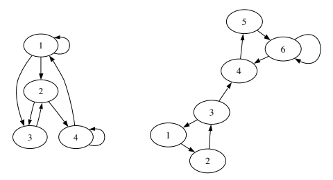
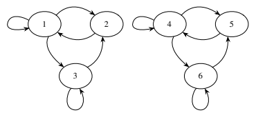
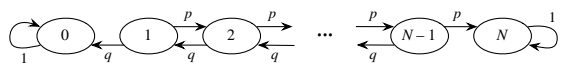
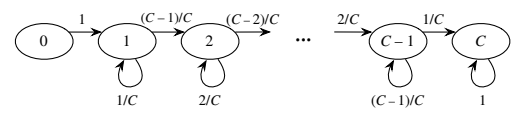
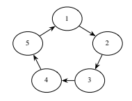
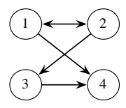

flowchart LR R((R)) -->|2/3| S((S)) S -->|1/2| R R -->|1/3| R S -->|1/2| S
11 마르코프 연쇄
마르코프 연쇄는 서로 독립이 아닌 확률변수에도 큰 수의 법칙이 적용될 수 있음을 보이려는 목적으로 1906년 안드레이 마르코프(마르코프 부등식의 그 마르코프)가 처음 도입했다. 마르코프 모형이 어디에서 나오는지 알아보기 위해, 먼저 독립이고 동일한 분포를 따르는 확률변수의 수열 \(X_0,X_1,\ldots,X_n,\ldots\)을 생각하고 \(n\)을 시간으로 해석하자. 이것이 10장 전체에서 다룬 상황이지만, 현실 세계의 현상을 모형화할 때 독립성은 지나치게 제약적인 가정일 수 있다. 독립성은 \(X_n\)들이 서로에 관한 정보를 전혀 주지 않는다는 뜻이다. 다른 극단으로, \(X_n\)들 사이에 임의의 상호작용을 허용하면 기본적인 것조차 계산하기가 매우 어려워진다. 마르코프 연쇄는 곧 정확히 정의할 의미에서 한 단계의 의존성을 보이는 확률변수 수열이다. 따라서 마르코프 연쇄는 완전한 독립과 완전한 의존 사이의 적절한 중간 지점이다.
마르코프 연쇄는 고안된 이후 생물학, 게임 이론, 금융, 머신러닝, 통계물리학 등 매우 다양한 분야에서 대단히 중요해졌다. 또한 마르코프 연쇄 몬테카를로(MCMC)라고 하는 알고리즘을 통해 복잡한 분포를 모의실험하는 데에도 널리 쓰인다. 이 장에서는 마르코프 연쇄와 그 성질을 소개하고, 다음 장에서는 MCMC 기법의 몇 가지 예를 살펴본다.
11.1 마르코프 성질과 전이행렬
마르코프 연쇄는 공간과 시간 양쪽에서 “살아간다”. \(X_n\)이 가질 수 있는 값들의 집합을 상태공간이라고 하며, 첨자 \(n\)은 시간에 따른 과정의 진행을 나타낸다. 마르코프 연쇄의 상태공간은 이산적일 수도 연속적일 수도 있고, 시간 역시 이산적일 수도 연속적일 수도 있다(연속시간에서는 모든 실수 \(t\geq0\)에 대해 정의된 과정 \(X_t\)를 생각할 수 있다). 이 장에서는 유한한 상태공간을 가진 이산상태·이산시간 마르코프 연쇄만 다룬다. 구체적으로 \(X_n\)이 유한집합의 값을 취한다고 가정하며, 보통 이 집합을 \(\{1,2,\ldots,M\}\) 또는 \(\{0,1,\ldots,M\}\)으로 둔다.
정의 11.1.1 (마르코프 연쇄). 상태공간 \(\{1,2,\ldots,M\}\)의 값을 취하는 확률변수 수열 \(X_0,X_1,X_2,\ldots\)이 모든 \(n\geq0\)에 대해 다음을 만족하면 마르코프 연쇄라고 한다.
\[P(X_{n+1}=j\mid X_n=i,X_{n-1}=i_{n-1},\ldots,X_0=i_0)=P(X_{n+1}=j\mid X_n=i).\]
옮긴이 주: 이 조건부확률의 등식은 조건으로 주어진 이력의 확률이 양수인 경우에 적용한다.
\(P(X_{n+1}=j\mid X_n=i)\)를 상태 \(i\)에서 상태 \(j\)로의 전이확률이라고 한다. 이 책에서 마르코프 연쇄라고 할 때는 시간 동질적이라고 암묵적으로 가정한다. 이는 전이확률 \(P(X_{n+1}=j\mid X_n=i)\)가 모든 시간 \(n\)에 대해 같다는 뜻이다. 다만 문헌마다 “시간 동질적 마르코프 연쇄”라고 할지 단지 “마르코프 연쇄”라고 할지 통일되어 있지 않으므로 주의해야 한다.
위 조건을 마르코프 성질이라고 한다. 이는 과거 전체의 이력 \(X_0,X_1,\ldots,X_n\)이 주어졌을 때 \(X_{n+1}\)을 예측하는 데 가장 최근 항 \(X_n\)만이 중요하다는 뜻이다. 시간 \(n\)을 현재, 그 이전을 과거, 그 이후를 미래라고 생각하면, 마르코프 성질은 현재가 주어졌을 때 과거와 미래가 조건부로 독립이라는 뜻이다. 마르코프 성질은 조건부확률 계산을 크게 단순화한다. 과거 전체를 조건으로 삼는 대신 가장 최근 값만 조건으로 삼으면 된다.
마르코프 연쇄의 움직임을 기술하려면 한 상태에서 다른 모든 상태로 이동할 확률, 즉 마르코프 성질의 오른쪽에 있는 확률 \(P(X_{n+1}=j\mid X_n=i)\)를 알아야 한다. 이 정보는 전이행렬이라는 행렬에 담을 수 있다. 이 행렬의 \((i,j)\) 성분은 연쇄가 한 단계에서 상태 \(i\)에서 상태 \(j\)로 갈 확률이다.
정의 11.1.2 (전이행렬). \(X_0,X_1,X_2,\ldots\)을 상태공간이 \(\{1,2,\ldots,M\}\)인 마르코프 연쇄라 하고, \(q_{ij}=P(X_{n+1}=j\mid X_n=i)\)를 상태 \(i\)에서 상태 \(j\)로의 전이확률이라 하자. \(M\times M\) 행렬 \(Q=(q_{ij})\)를 이 연쇄의 전이행렬이라고 한다.
\(Q\)는 모든 성분이 음이 아니고 각 행의 합이 1인 행렬이다. 어느 상태 \(i\)에서 출발하든 “1로 이동”, “2로 이동”, …, “\(M\)으로 이동”이라는 사건들은 서로 배반이며, 연쇄는 어딘가로 가야 하므로 이들의 합집합의 확률이 1이기 때문이다.
예제 11.1.3 (비와 맑음의 마르코프 연쇄). 어떤 날이든 날씨가 비가 오거나 맑다고 하자. 오늘 비가 오면 내일 비가 올 확률은 \(1/3\), 맑을 확률은 \(2/3\)이다. 오늘 맑으면 내일 비가 올 확률과 맑을 확률은 각각 \(1/2\)이다. \(n\)일의 날씨를 \(X_n\)이라고 하면 \(X_0,X_1,X_2,\ldots\)은 상태공간 \(\{R,S\}\) 위의 마르코프 연쇄이다. 여기서 \(R\)은 비, \(S\)는 맑음을 뜻한다. 이 과정의 설명에 따르면 내일의 날씨를 예측하는 데 오늘의 날씨만 중요하므로 마르코프 성질이 성립함을 알 수 있다.
이 연쇄의 전이행렬은
\[\begin{array}{c|cc} & R&S\\\hline R&1/3&2/3\\ S&1/2&1/2\end{array}\]
이다. 첫 번째 행은 상태 \(R\)에서 출발해 확률 \(1/3\)로 상태 \(R\)로 돌아가고 확률 \(2/3\)로 상태 \(S\)로 전이한다는 뜻이다. 두 번째 행은 상태 \(S\)에서 출발해 확률 \(1/2\)로 상태 \(R\)로 이동하고 확률 \(1/2\)로 상태 \(S\)에 머문다는 뜻이다. 대신 다음 행렬을 전이행렬로 사용해도 마찬가지이다.
\[\begin{array}{c|cc} & S&R\\\hline S&1/2&1/2\\ R&2/3&1/3\end{array}\]
일반적으로 마르코프 연쇄의 상태에 명백한 순서가 없다면(\(R\)과 \(S\)처럼), 상태의 순서를 정해 일관되게 사용하기만 하면 된다.
마르코프 연쇄의 전이확률은 그림으로도 나타낼 수 있다. 각 상태를 원으로 나타내고 화살표는 가능한 한 단계 전이를 나타낸다. 입자가 상태 사이를 돌아다니며 어느 화살표를 따라갈지 무작위로 선택한다고 생각할 수 있다. 화살표 옆에는 해당 전이확률을 쓴다.
내일의 날씨가 오늘과 어제의 날씨에 의존한다면 어떨까? 예를 들어, 날씨가 위와 같이 움직이되 이틀 연속 비가 왔다면 내일은 반드시 맑고, 이틀 연속 맑았다면 내일은 반드시 비가 온다고 하자. 이렇게 새로운 날씨의 움직임 아래에서는 \(X_n\)이 더 이상 마르코프 연쇄를 이루지 않는다. 오늘의 날씨를 조건으로 주어도 어제의 날씨가 내일의 날씨를 예측하는 데 여전히 유용한 정보를 주므로 마르코프 성질을 위반하기 때문이다.
하지만 상태공간을 확장하면 새로운 마르코프 연쇄를 만들 수 있다. \(n\geq1\)에 대해 \(Y_n=(X_{n-1},X_n)\)이라고 하자. 그러면 \(Y_1,Y_2,\ldots\)은 상태공간 \(\{(R,R),(R,S),(S,R),(S,S)\}\) 위의 마르코프 연쇄이다. 새로운 전이행렬이 다음과 같음을 확인할 수 있다.
\[\begin{array}{c|cccc} &(R,R)&(R,S)&(S,R)&(S,S)\\\hline (R,R)&0&1&0&0\\ (R,S)&0&0&1/2&1/2\\ (S,R)&1/3&2/3&0&0\\ (S,S)&0&0&1&0\end{array}\]
이에 대응하는 그림은 다음과 같다.
flowchart LR RR((RR)) -->|1| RS((RS)) RS -->|1/2| SR((SR)) RS -->|1/2| SS((SS)) SR -->|1/3| RR SR -->|2/3| RS SS -->|1| SR
마찬가지로 상태공간을 더 확장하여 마르코프 성질이 성립하게 하면 날씨의 3차 또는 4차 의존성도 다룰 수 있다. \(\square\)
마르코프 연쇄의 전이행렬 \(Q\)를 알면 더 긴 시간에 걸친 전이확률을 계산할 수 있다.
정의 11.1.4 (\(n\)단계 전이확률). \(i\)에서 \(j\)로의 \(n\)단계 전이확률은 \(i\)에 있은 후 정확히 \(n\)단계 뒤에 \(j\)에 있을 확률이다. 이를 \(q_{ij}^{(n)}\)으로 나타낸다.
\[q_{ij}^{(n)}=P(X_n=j\mid X_0=i).\]
다음이 성립한다.
\[q_{ij}^{(2)}=\sum_kq_{ik}q_{kj}.\]
두 단계 만에 \(i\)에서 \(j\)로 가려면 어떤 중간 상태 \(k\)를 거쳐야 하며, 중간 상태가 주어지면 다음 전이는 이전 이력과 조건부로 독립이기 때문이다. 행렬곱의 정의에 따라 오른쪽은 \(Q^2\)의 \((i,j)\) 성분이므로 \(Q^2\)가 두 단계 전이확률을 준다는 결론을 얻는다. 귀납법으로 전이행렬의 \(n\)제곱이 \(n\)단계 전이확률을 준다.
옮긴이 주: 원문의 두 전이가 독립이라는 표현은 위와 같이 조건부 독립으로 해석해야 한다.
\[q_{ij}^{(n)}=Q^n\text{의 }(i,j)\text{ 성분}.\]
예제 11.1.5 (4개 상태 마르코프 연쇄의 전이행렬). 그림 11.1에 나타낸 4개 상태 마르코프 연쇄를 생각하자. 이 경우처럼 화살표 위에 확률을 쓰지 않았다면, 주어진 상태에서 나가는 모든 화살표가 선택될 가능성이 같다는 뜻이다. 예를 들어 상태 1에서 나가는 화살표는 3개이므로 전이 \(1\to3\), \(1\to2\), \(1\to1\)의 확률은 모두 \(1/3\)이다. 따라서 이 연쇄의 전이행렬은
\[Q=\begin{pmatrix}1/3&1/3&1/3&0\\0&0&1/2&1/2\\0&1&0&0\\1/2&0&0&1/2\end{pmatrix}.\]
flowchart LR A((1)) --> A A --> B((2)) A --> C((3)) B --> C B --> D((4)) C --> B D --> A D --> D
그림 11.1: 4개 상태의 마르코프 연쇄.
상태 1에서 출발하여 5단계 후 상태 3에 있을 확률을 계산하려면 \(Q^5\)의 \((1,3)\) 성분을 보면 된다. 컴퓨터로 \(Q^5\)을 구하면
\[Q^5=\begin{pmatrix} 853/3888&509/1944&52/243&395/1296\\ 173/864&85/432&31/108&91/288\\ 37/144&29/72&1/9&11/48\\ 499/2592&395/1296&71/324&245/864 \end{pmatrix},\]
따라서 \(q_{13}^{(5)}=52/243\)이다. \(\square\)
7장의 언어로 표현하면 전이행렬 \(Q\)는 연쇄의 초기 상태가 주어졌을 때 \(X_1\)의 조건부분포를 담고 있다. 구체적으로 \(Q\)의 \(i\)번째 행은 \(X_0=i\)가 주어졌을 때 \(X_1\)의 조건부 PMF를 행벡터로 나타낸 것이다. 마찬가지로 \(Q^n\)의 \(i\)번째 행은 \(X_0=i\)가 주어졌을 때 \(X_n\)의 조건부 PMF이다.
\(X_0,X_1,\ldots\)의 주변분포를 구하려면 전이행렬뿐 아니라 연쇄의 초기 조건도 지정해야 한다. 초기 상태 \(X_0\)은 확정적으로 지정할 수도 있고 어떤 분포에 따라 무작위로 정할 수도 있다. \((t_1,t_2,\ldots,t_M)\)을 \(X_0\)의 PMF를 벡터로 나타낸 것, 즉 \(t_i=P(X_0=i)\)라고 하자. 그러면 전체확률법칙을 이용해 모든 상태에 대해 평균을 취함으로써 어느 시간에서든 전이행렬로부터 연쇄의 주변분포를 계산할 수 있다.
명제 11.1.6 (\(X_n\)의 주변분포). \(t_i=P(X_0=i)\)로 \(t=(t_1,t_2,\ldots,t_M)\)을 정의하고 \(t\)를 행벡터로 보자. 그러면 \(X_n\)의 주변분포는 벡터 \(tQ^n\)으로 주어진다. 즉 \(tQ^n\)의 \(j\)번째 성분이 \(P(X_n=j)\)이다.
증명. \(X_0\)을 조건으로 삼아 전체확률법칙을 적용하면, \(n\)단계 후 연쇄가 상태 \(j\)에 있을 확률은
\[P(X_n=j)=\sum_{i=1}^{M}P(X_0=i)P(X_n=j\mid X_0=i)=\sum_{i=1}^{M}t_iq_{ij}^{(n)}.\]
행렬곱의 정의에 따라 이는 \(tQ^n\)의 \(j\)번째 성분이다. \(\blacksquare\)
예제 11.1.7 (4개 상태 마르코프 연쇄의 주변분포). 그림 11.1의 4개 상태 마르코프 연쇄를 다시 생각하자. 초기 조건이 \(t=(1/4,1/4,1/4,1/4)\)라고 하자. 이는 연쇄가 네 상태 각각에서 출발할 확률이 같다는 뜻이다. \(X_n\)을 시간 \(n\)에서 연쇄의 위치라고 하자. 그러면 \(X_1\)의 주변분포는
\[tQ=\begin{pmatrix}1/4&1/4&1/4&1/4\end{pmatrix} \begin{pmatrix}1/3&1/3&1/3&0\\0&0&1/2&1/2\\0&1&0&0\\1/2&0&0&1/2\end{pmatrix} =\begin{pmatrix}5/24&1/3&5/24&1/4\end{pmatrix}.\]
\(X_5\)의 주변분포는
\[tQ^5=\begin{pmatrix}1/4&1/4&1/4&1/4\end{pmatrix} \begin{pmatrix} 853/3888&509/1944&52/243&395/1296\\ 173/864&85/432&31/108&91/288\\ 37/144&29/72&1/9&11/48\\ 499/2592&395/1296&71/324&245/864 \end{pmatrix} =\begin{pmatrix}3379/15552&2267/7776&101/486&1469/5184\end{pmatrix}.\]
행렬곱은 컴퓨터로 수행했다. \(\square\)
11.2 상태의 분류
이 절에서는 마르코프 연쇄의 여러 특성을 설명하는 용어를 소개한다. 마르코프 연쇄의 상태는 장기적으로 반복해서 방문하는지, 아니면 결국 떠나 다시는 방문하지 않는지에 따라 재귀 상태 또는 일시 상태로 분류할 수 있다. 상태는 주기에 따라서도 분류할 수 있다. 주기는 어떤 상태를 연속해서 방문하는 사이에 얼마나 많은 시간이 흐를 수 있는지를 나타내는 양의 정수이다. 이러한 특성은 11.3절에서 살펴볼 마르코프 연쇄의 장기적인 거동을 결정하므로 중요하다.
재귀성과 일시성의 개념은 구체적인 예를 통해 가장 잘 설명할 수 있다. 그림 11.2의 왼쪽에 나온 마르코프 연쇄(앞에서 예제 11.1.5에 등장했다)에서는 어느 상태에서든 다른 모든 상태에 도달할 수 있으므로, 상태들 사이를 움직이는 입자는 장기적으로 네 상태 모두에 계속 머물게 된다. 반면 그림 11.2의 오른쪽 연쇄를 생각하고 입자가 상태 1에서 출발한다고 하자. 연쇄는 한동안 상태 1, 2, 3이 이루는 삼각형에 머물 수 있지만 결국 상태 4에 도달하며, 거기서는 상태 1, 2, 3으로 다시 돌아갈 수 없다. 그 후 연쇄는 상태 4, 5, 6 사이를 영원히 돌아다닌다. 상태 1, 2, 3은 일시 상태이고 상태 4, 5, 6은 재귀 상태이다. 일반적으로 이 개념들은 다음과 같이 정의한다.

정의 11.2.1 (재귀 상태와 일시 상태). 마르코프 연쇄의 상태 \(i\)에서 출발했을 때 연쇄가 결국 \(i\)로 돌아올 확률이 1이면 \(i\)를 재귀 상태라고 한다. 그렇지 않으면 그 상태는 일시 상태이다. 즉, 연쇄가 \(i\)에서 출발할 때 \(i\)로 결코 돌아오지 않을 확률이 양수이다.
사실 일시 상태의 정의에서는 그 상태로 결코 돌아오지 않을 확률이 양수이면 충분하지만, 더 강한 주장을 할 수 있다. \(i\)를 영원히 떠날 확률이 양수이기만 하면 연쇄는 결국 \(i\)를 영원히 떠난다. 나아가 그 상태로 돌아오는 횟수의 분포도 구할 수 있다.
명제 11.2.2 (일시 상태로 돌아오는 횟수는 기하분포를 따른다). \(i\)를 마르코프 연쇄의 일시 상태라 하자. \(i\)에서 출발하여 \(i\)로 결코 돌아오지 않을 확률이 양수 \(p>0\)이라고 하자. 그러면 \(i\)에서 출발하여 영원히 떠나기 전에 연쇄가 \(i\)로 돌아오는 횟수는 \(\operatorname{Geom}(p)\) 분포를 따른다.
증명은 기하분포의 이야기로부터 나온다. 연쇄가 \(i\)에 있을 때마다 베르누이 시행을 하는데, 연쇄가 결국 \(i\)로 돌아오면 ‘실패’, \(i\)를 영원히 떠나면 ‘성공’이다. 이 시행들은 마르코프 성질에 의해 독립이다. 상태 \(i\)로 돌아오는 횟수는 첫 성공 전의 실패 횟수이므로 기하분포의 이야기에 들어맞는다. 그리고 기하 확률변수는 항상 유한한 값을 가지므로, 이 명제는 유한한 횟수만큼 방문한 후 연쇄가 상태 \(i\)를 영원히 떠남을 알려준다.
상태의 수가 너무 많지 않다면, 마르코프 연쇄의 그림을 그리고 그림 11.2의 연쇄를 분석할 때 사용한 것과 같은 방식으로 추론하여 상태를 재귀 상태와 일시 상태로 분류할 수 있다. 모든 상태가 재귀 상태라고 즉시 결론 내릴 수 있는 특수한 경우는 연쇄가 기약인 경우이다. 이는 어느 상태에서든 다른 모든 상태로 갈 수 있다는 뜻이다.
옮긴이 주: 이 결론에는 이 장에서 가정하는 유한 상태공간이 필요하다. 무한 상태공간의 기약 연쇄에서는 일시 상태가 있을 수 있다.
정의 11.2.3 (기약 연쇄와 가약 연쇄). 전이행렬이 \(Q\)인 마르코프 연쇄에서 임의의 두 상태 \(i\), \(j\)에 대해 유한한 단계 안에 \(i\)에서 \(j\)로 갈 수 있으면(양의 확률로 갈 수 있으면) 그 연쇄를 기약이라고 한다. 즉, 임의의 상태 \(i,j\)에 대해 \(Q^n\)의 \((i,j)\) 성분이 양수인 양의 정수 \(n\)이 존재한다. 기약이 아닌 마르코프 연쇄를 가약이라고 한다.
명제 11.2.4 (기약이면 모든 상태가 재귀 상태이다). 상태공간이 유한한 기약 마르코프 연쇄에서는 모든 상태가 재귀 상태이다.
증명. 적어도 하나의 상태는 재귀 상태여야 한다. 만약 모든 상태가 일시 상태라면 연쇄는 결국 모든 상태를 영원히 떠나 갈 곳이 없게 될 것이기 때문이다! 따라서 일반성을 잃지 않고 상태 1이 재귀 상태라고 가정하고, 다른 임의의 상태 \(i\)를 생각하자. 기약성의 정의에 따라 어떤 \(n\)에 대해서는 \(q_{1i}^{(n)}\)이 양수임을 안다. 따라서 연쇄가 상태 1에 있을 때마다 추가로 \(n\)단계 후 상태 \(i\)에 있을 확률이 양수이다.
연쇄는 상태 1을 무한히 자주 방문하므로 결국 상태 1에서 상태 \(i\)에 도달한다. 상태 1을 방문할 때마다 시행이 시작되며, 최대 \(n\)단계 안에 상태 \(i\)에 도달하는 것을 ‘성공’이라고 생각하면 된다. 상태 1은 재귀 상태이므로 연쇄는 상태 \(i\)에서 상태 1로 돌아오고, 같은 논리에 따라 결국 다시 상태 \(i\)에 도달한다. 귀납적으로 연쇄는 상태 \(i\)를 무한히 자주 방문한다. \(i\)는 임의의 상태였으므로 모든 상태가 재귀 상태라는 결론을 얻는다. \(\blacksquare\)
옮긴이 주: 각 시행 구간이 겹치지 않도록 이전 시행의 \(n\)단계가 지난 뒤 상태 1을 방문한 시점을 다음 시작점으로 택할 수 있다. 마르코프 성질에 의해 각 시도에서 성공할 조건부확률은 양수로 일정하다.
이 명제의 역은 성립하지 않는다. 모든 상태가 재귀 상태인 가약 마르코프 연쇄도 가능하다. 아래의 마르코프 연쇄는 그 한 예로, 상태들이 두 개의 ‘섬’을 이룬다.

주의 11.2.5. 재귀성이나 일시성은 마르코프 연쇄의 각 상태의 성질이고, 기약성이나 가약성은 연쇄 전체의 성질임에 주의하자.
앞 장에서 만난 친숙한 문제 두 가지를 마르코프 연쇄의 관점에서 살펴보자. 각각에 대해 재귀 상태와 일시 상태를 찾아보겠다.
예제 11.2.6 (마르코프 연쇄로 보는 도박사의 파산). 도박사의 파산 문제(예제 2.7.3)에서 두 도박사 A와 B는 각각 \(i\)달러와 \(N-i\)달러를 가지고 시작하여 1달러씩 반복해서 내기를 한다. 각 회에서 도박사 A가 이길 확률은 \(p\), 질 확률은 \(q=1-p\)이다. 시점 \(n\)에서 도박사 A가 가진 돈을 \(X_n\)이라 하자. 그러면 \(X_0,X_1,\ldots\)은 상태공간 \(\{0,1,\ldots,N\}\) 위의 마르코프 연쇄이다. 설정에 따라 \(X_0=i\)이다. 마르코프 연쇄가 A 또는 B의 파산을 뜻하는 0 또는 \(N\)에 도달하면 그 상태에 영원히 머문다. 연쇄의 그림은 다음과 같다.

2장에서 A 또는 B가 파산할 확률이 1임을 증명했으므로, 0과 \(N\) 이외의 어느 상태 \(i\)에서 출발하든 마르코프 연쇄는 결국 상태 0 또는 \(N\)에 흡수되어 다시는 \(i\)로 돌아오지 않는다. 따라서 이 마르코프 연쇄에서 상태 0과 \(N\)은 재귀 상태이고 나머지 모든 상태는 일시 상태이다. 상태 0에서는 상태 0으로만, 상태 \(N\)에서는 상태 \(N\)으로만 갈 수 있으므로 이 연쇄는 가약이다. \(\square\)
예제 11.2.7 (마르코프 연쇄로 보는 쿠폰 수집가). 쿠폰 수집가 문제(예제 4.3.12)에는 \(C\)종류의 쿠폰(또는 장난감)이 있고, 매번 \(C\)종류 중에서 복원추출하여 하나씩 모은다. \(n\)번 시도한 후 모은 서로 다른 쿠폰의 종류 수를 \(X_n\)이라 하자. 그러면 \(X_0,X_1,\ldots\)은 상태공간 \(\{0,1,\ldots,C\}\) 위의 마르코프 연쇄이다. 설정에 따라 \(X_0=0\)이다. 이 연쇄는 다음 그림과 같다.

상태 \(C\)를 제외하면 어떤 상태를 떠난 후 그 상태로 다시 돌아갈 수 없다. 모은 쿠폰의 종류 수는 시간이 지남에 따라 증가할 수만 있기 때문이다. 따라서 재귀 상태인 \(C\)를 제외한 모든 상태는 일시 상태이다. 예를 들어 상태 2에서 상태 1로 되돌아갈 수 없으므로 이 연쇄는 가약이다. \(\square\)
상태를 분류하는 또 다른 방법은 주기를 이용하는 것이다. 상태의 주기는 그 상태를 연속해서 방문하는 사이에 얼마나 많은 시간이 흐를 수 있는지를 나타낸다.
정의 11.2.8 (상태의 주기, 주기적 연쇄와 비주기적 연쇄). 마르코프 연쇄의 상태 \(i\)의 주기는 \(i\)에서 출발하여 \(i\)로 돌아오는 데 걸릴 수 있는 단계 수들의 최대공약수이다. 즉 \(i\)의 주기는 \(Q^n\)의 \((i,i)\) 성분이 양수인 수 \(n\)들의 최대공약수이다. (\(i\)에서 출발한 후 \(i\)로 다시 돌아오는 것이 불가능하면 \(i\)의 주기는 \(\infty\)이다.) 주기가 1인 상태는 비주기적, 그 외의 상태는 주기적이라고 한다. 연쇄의 모든 상태가 비주기적이면 그 연쇄를 비주기적이라고 하고, 그렇지 않으면 주기적이라고 한다.
예를 들어 그림 11.2의 두 마르코프 연쇄를 다시 생각해 보자. 이들은 그림 11.3에 다시 나타나 있다. 먼저 오른쪽의 6상태 연쇄를 살펴보자. 상태 1에서 출발하면 3단계, 6단계, 9단계 등이 지난 후 상태 1로 돌아올 수 있지만, 3의 배수가 아닌 단계 수가 지난 후에는 상태 1로 돌아올 수 없다. 따라서 상태 1의 주기는 3이다. 마찬가지로 상태 2와 3의 주기도 3이다. 반면 상태 4, 5, 6의 주기는 1이지만, 주기가 1이 아닌 상태가 적어도 하나 있으므로 이 연쇄는 주기적이다. 이와 대조적으로 왼쪽 연쇄에서는 모든 상태가 비주기적이므로 연쇄도 비주기적이다.
예제 11.2.6의 도박사의 파산 연쇄에서는 주기가 1인 0과 \(N\)을 제외한 각 상태의 주기가 2이다. 쿠폰 수집가 연쇄에서는 각 상태의 주기가 1이지만, 상태 0으로 되돌아가는 것이 불가능하므로 상태 0의 주기는 \(\infty\)이다. 따라서 이 두 연쇄 중 어느 것도 비주기적이지 않다.
옮긴이 주: 도박사의 파산에서 내부 상태의 주기가 2라는 설명은 \(0<p<1\)일 때 성립한다. \(p=0\) 또는 \(p=1\)이면 내부 상태로 돌아올 수 없으므로 위 정의에 따라 주기는 \(\infty\)이다.
기약 연쇄가 비주기적인지 확인하는 것은 흔히 생각보다 훨씬 쉽다. 다음 명제에 따르면 주기가 1이 아닌 상태를 찾기 위해 상태별로 살펴보는 대신 한 상태의 주기만 계산하면 된다.
명제 11.2.9 (기약 연쇄의 주기). 기약 마르코프 연쇄에서는 모든 상태의 주기가 같다.
11.3 정상분포
재귀성과 일시성은 마르코프 연쇄의 장기적인 거동을 이해하는 데 중요한 개념이다. 처음에는 연쇄가 일시 상태에서 시간을 보낼 수 있지만, 결국에는 모든 시간을 재귀 상태에서 보낸다. 그렇다면 각각의 재귀 상태에서 보내는 시간의 비율은 얼마일까? 이 질문에는 연쇄의 정상분포(stationary distribution), 또는 평형분포(steady-state distribution)가 답해 준다. 이 절에서 배우겠지만, 기약이고 비주기적인 마르코프 연쇄에서는 정상분포가 초기 조건과 관계없이 연쇄의 장기적인 거동을 설명한다. 정상분포는 특정 상태에 있을 장기적인 확률과 연쇄가 그 상태에서 보내는 시간의 장기적인 비율을 모두 알려준다.
정의 11.3.1 (정상분포). \(s_i\geq 0\), \(\sum_i s_i=1\)을 만족하는 행벡터 \(\mathbf{s}=(s_1,\ldots,s_M)\)에 대해 모든 \(j\)에 대하여
\[ \sum_i s_iq_{ij}=s_j \]
가 성립하면 \(\mathbf{s}\)를 전이행렬이 \(Q\)인 마르코프 연쇄의 정상분포라고 한다. 이 연립선형방정식은 하나의 행렬방정식으로 나타낼 수 있다.
\[ \mathbf{s}Q=\mathbf{s}. \]
\(\mathbf{s}\)가 \(X_0\)의 분포라면 \(\mathbf{s}Q\)는 \(X_1\)의 주변분포임을 떠올려 보자. 따라서 \(\mathbf{s}Q=\mathbf{s}\)라는 식은 \(X_0\)이 분포 \(\mathbf{s}\)를 따르면 \(X_1\)도 분포 \(\mathbf{s}\)를 따른다는 뜻이다. 그러면 \(X_2\)도 분포 \(\mathbf{s}\)를 따르고 \(X_3\)도 마찬가지이며, 이후에도 계속 그렇다. 즉, 초기분포가 정상분포 \(\mathbf{s}\)인 마르코프 연쇄는 영원히 정상분포에 머문다.
마르코프 연쇄의 정상분포를 직관적으로 이해하는 한 가지 방법은 많은 입자가 전이확률에 따라 각각 독립적으로 상태에서 상태로 움직인다고 상상하는 것이다. 시간이 지나면 입자들의 체계는 매 시점마다 한 상태에서 나가는 입자의 수와 그 상태로 들어오는 입자의 수가 균형을 이루는 평형에 가까워지고, 이는 모든 상태에 대해 성립한다. 이 평형에서 체계 전체는 정지해 있는 것처럼 보이며, 각 상태에 있는 입자의 비율은 정상분포로 주어진다. 정상분포에 대한 이런 관점은 정의 11.4.1 다음에서 더 살펴본다.
옮긴이 주: 유한한 수의 입자에서는 실제 유입과 유출에 변동이 있으므로 균형은 기대 유량의 관점에서 이해한다. 초기분포가 정상분포에 수렴하려면 아래 정리의 조건이 필요하다.
주의 11.3.2 (정상분포는 조건부 분포가 아닌 주변분포이다). 마르코프 연쇄가 정상분포에 있을 때 모든 \(n\)에 대해 \(X_n\)의 무조건부 확률질량함수는 \(\mathbf{s}\)와 같지만, \(X_{n-1}=i\)가 주어졌을 때 \(X_n\)의 조건부 확률질량함수는 여전히 전이행렬 \(Q\)의 \(i\)번째 행으로 주어진다.
마르코프 연쇄가 정상분포에서 시작하면 모든 \(X_n\)은 동일한 분포를 따른다(주변분포가 모두 \(\mathbf{s}\)로 같기 때문이다). 그러나 \(X_{n-1}=i\)가 주어졌을 때 \(X_n\)의 조건부분포는 일반적으로 \(X_n\)의 주변분포와 다르므로, 이들이 반드시 독립인 것은 아니다.
주의 11.3.3 (유감주술). 마르코프 연쇄가 정상분포에서 시작하면 \(X_n\)의 주변분포는 모두 같다. 이것은 \(X_n\) 자체가 모두 같다는 뜻과 다르다. 확률변수 \(X_n\)과 그 분포를 혼동하는 것은 유감주술의 한 예이다.
매우 작은 마르코프 연쇄에서는 정의를 이용하여 정상분포를 손으로 구할 수 있다. 다음 예제는 두 상태를 가진 연쇄에 대해 이를 보여준다.
예제 11.3.4 (두 상태 연쇄의 정상분포).
\[ Q=\begin{pmatrix}1/3&2/3\\1/2&1/2\end{pmatrix} \]
이라 하자. 정상분포는 \(\mathbf{s}=(s,1-s)\) 꼴이며, 다음 방정식에서 \(s\)를 구해야 한다.
\[ \begin{pmatrix}s&1-s\end{pmatrix} \begin{pmatrix}1/3&2/3\\1/2&1/2\end{pmatrix} =\begin{pmatrix}s&1-s\end{pmatrix}. \]
이는 다음과 동치이다.
\[ \begin{aligned} \tfrac13s+\tfrac12(1-s)&=s,\\ \tfrac23s+\tfrac12(1-s)&=1-s. \end{aligned} \]
이 방정식들의 유일한 해는 \(s=3/7\)이므로 \((3/7,4/7)\)이 이 마르코프 연쇄의 유일한 정상분포이다.
더 일반적으로 \(q_{12}=a\), \(q_{21}=b\)이고 \(0<a<1\), \(0<b<1\)이라고 하자. 그러면 전이행렬은
\[ Q=\begin{pmatrix}1-a&a\\b&1-b\end{pmatrix} \]
이다. \(\mathbf{s}=(s_1,s_2)\)라고 쓰면 방정식 \(\mathbf{s}Q=\mathbf{s}\)는 다음 연립선형방정식이 된다.
\[ \begin{aligned} (1-a)s_1+bs_2&=s_1,\\ as_1+(1-b)s_2&=s_2. \end{aligned} \]
두 방정식은 모두 \(as_1=bs_2\)로 간단해진다. \(s_2=1-s_1\)을 대입하면 유일한 해는
\[ \mathbf{s}=\left(\frac{b}{a+b},\frac{a}{a+b}\right) \]
이다. 요컨대 \(\mathbf{s}\propto(b,a)\), 즉 \(\mathbf{s}\)는 \((b,a)\)에 상수를 곱한 것이다. 그 상수는 \(\mathbf{s}\)의 성분의 합이 1이 되도록 정한다. 확인해 보자. 앞에서 구체적인 숫자로 주어진 \(Q\)에 대해 이 결과는 정상분포가 \((b,a)=(1/2,2/3)\)에 비례해야 한다고 말한다. 분모를 없애기 위해 6을 곱하면 이는 \((3,4)\)에 비례한다는 것과 같다. 앞에서 구한 정상분포는 \((3/7,4/7)\)이었고, 이는 실제로 \((3,4)\)에 비례한다. \(\square\)
선형대수의 용어로 방정식 \(\mathbf{s}Q=\mathbf{s}\)는 \(\mathbf{s}\)가 \(Q\)의 고윳값 1에 대응하는 왼쪽 고유벡터라는 뜻이다(수학 부록 A.3절 참조). 일반적인 종류의 고유벡터인 오른쪽 고유벡터를 얻으려면 전치하여 \(Q'\mathbf{s}'=\mathbf{s}'\)로 쓴다. 여기서 기호 \('\)는 전치를 뜻한다.
11.3.1 존재성과 유일성
정상분포는 항상 존재하며 유일할까? 상태공간이 유한하면 정상분포는 항상 존재한다. 나아가 기약 마르코프 연쇄에서는 정상분포가 유일하다.
정리 11.3.5 (정상분포의 존재성과 유일성). 임의의 기약 마르코프 연쇄에는 유일한 정상분포가 존재한다. 이 분포에서 모든 상태의 확률은 양수이다.
옮긴이 주: 이 장에서 가정한 유한 상태공간이 필요하다. 무한 상태공간의 기약 연쇄에서는 정상분포가 없을 수 있다.
이 정리는 페론–프로베니우스 정리라고 하는 선형대수의 결과로부터 따라 나온다. 이 정리는 수학 부록 A.3절에 제시되어 있다.
그림 11.3의 왼쪽에 있는 4상태 연쇄는 기약이다. 그림에서 화살표를 따라가면 어디에서든 어디로든 갈 수 있고, 전이행렬 \(Q\)로 표현하면 \(Q^5\)의 모든 성분이 양수이다. 따라서 정리 11.3.5에 의해 이 연쇄에는 유일한 정상분포가 있다.
반면 예제 11.2.6의 도박사의 파산 연쇄는 가약이므로 이 정리를 적용할 수 없다. 실제로 이 연쇄에는 정상분포가 무한히 많다. 장기적으로 연쇄는 상태 0에 도달하여 영원히 머물거나, 상태 \(N\)에 도달하여 영원히 머문다. 이를 통해 퇴화분포 \(\mathbf{s}=(1,0,\ldots,0)\)과 \(\mathbf{t}=(0,0,\ldots,1)\)이 모두 정상분포임을 짐작할 수 있고 쉽게 확인할 수 있다. 따라서 \(0\leq p\leq1\)인 임의의 가중결합 \(p\mathbf{s}+(1-p)\mathbf{t}\)도 정상분포이다. 성분의 합이 1이고
\[ (p\mathbf{s}+(1-p)\mathbf{t})Q =p\mathbf{s}Q+(1-p)\mathbf{t}Q =p\mathbf{s}+(1-p)\mathbf{t} \]
이기 때문이다. 여기서 \(Q\)는 여느 때처럼 전이행렬이다.
11.3.2 수렴
앞에서 정상분포가 연쇄의 장기적인 거동을 설명한다고 비공식적으로 말한 바 있다. 즉, 연쇄를 오랫동안 진행하면 \(X_n\)의 주변분포가 정상분포 \(\mathbf{s}\)에 수렴한다. 다음 정리는 연쇄가 기약이고 비주기적이면 이것이 성립함을 말한다. 이 경우 연쇄의 초기 조건과 관계없이 \(n\to\infty\)일 때 \(X_n\)의 확률질량함수는 정상분포에 수렴한다. 이는 정상성의 개념을 마르코프 연쇄의 장기적인 거동과 연결한다. 증명은 생략한다.
정리 11.3.6 (정상분포로의 수렴). \(X_0,X_1,\ldots\)을 정상분포가 \(\mathbf{s}\)이고 전이행렬이 \(Q\)인 기약이고 비주기적인 마르코프 연쇄라 하자. 그러면 \(n\to\infty\)일 때 \(P(X_n=i)\)는 \(s_i\)에 수렴한다. 전이행렬로 표현하면 \(Q^n\)은 모든 행이 \(\mathbf{s}\)인 행렬에 수렴한다.
따라서 많은 단계가 지난 후 연쇄가 상태 \(i\)에 있을 확률은 초기 조건과 관계없이 정상확률 \(s_i\)에 가깝다. 이 때문에 기약이고 비주기적인 연쇄는 특히 다루기 좋다. 기약성은 각 \((i,j)\)에 대해 \((i,j)\) 성분이 양수인 거듭제곱 \(Q^m\)이 존재함을 뜻한다. 여기에 비주기성도 가정하면 모든 \(i,j\)에 대해 동시에 적용되는 \(m\)을 찾을 수 있다. 더 정확히는 연쇄가 기약이고 비주기적일 필요충분조건은 어떤 거듭제곱 \(Q^m\)의 모든 성분이 양수인 것이다.
옮긴이 주: 마지막 필요충분조건 역시 유한 상태공간을 전제로 한다.
직관적으로 비주기성이라는 추가 조건은 다음 예제처럼 그저 원을 그리며 도는 연쇄 또는 예를 들어 어떤 상태에는 짝수 단계 후에만 도달할 수 있고 다른 상태에는 홀수 단계 후에만 도달할 수 있는 연쇄를 제외하는 데 필요하다.
예제 11.3.7 (주기적 연쇄). 아래 그림은 각 상태의 주기가 5인 주기적 마르코프 연쇄이다.

이 연쇄의 전이행렬은
\[ Q=\begin{pmatrix} 0&1&0&0&0\\0&0&1&0&0\\0&0&0&1&0\\0&0&0&0&1\\1&0&0&0&0 \end{pmatrix}. \]
\(\mathbf{s}=(1/5,1/5,1/5,1/5,1/5)\)가 이 연쇄의 정상분포임을 어렵지 않게 확인할 수 있고, 정리 11.3.5에 의해 \(\mathbf{s}\)는 유일하다. 그러나 연쇄가 \(X_0=1\)에서 시작한다고 하자. 그러면 \(X_n\)의 확률질량함수는 상태 \((n\bmod 5)+1\)에 확률 1을, 다른 모든 상태에 확률 0을 부여한다.1 특히 이 분포는 \(n\to\infty\)일 때 \(\mathbf{s}\)에 수렴하지 않는다. \(Q^n\)도 모든 행이 \(\mathbf{s}\)인 행렬에 수렴하지 않는다. 연쇄의 전이는 결정적이므로 \(Q^n\)은 항상 0과 1로 이루어져 있다. \(\square\)
마지막으로 정상분포는 임의의 특정 상태를 방문하는 사이의 평균 시간도 알려준다.
정리 11.3.8 (돌아오는 데 걸리는 시간의 기댓값). \(X_0,X_1,\ldots\)을 정상분포가 \(\mathbf{s}\)인 기약 마르코프 연쇄라 하자. 연쇄가 \(i\)에서 출발한다는 조건 아래 \(i\)로 돌아오는 데 걸리는 시간의 기댓값을 \(r_i\)라 하면 \(s_i=1/r_i\)이다.
이 정리들을 예제 11.3.4의 두 상태 연쇄에 적용해 보자.
예제 11.3.9 (두 상태 연쇄의 장기적인 거동). 장기적으로 예제 11.3.4의 연쇄는 시간의 \(3/7\)을 상태 1에서, \(4/7\)을 상태 2에서 보낸다. 상태 1에서 출발하면 상태 1로 돌아오는 데 평균 \(7/3\)단계가 걸린다. 전이행렬의 거듭제곱은 각 행이 정상분포인 행렬에 수렴한다.
\[ \begin{pmatrix}1/3&2/3\\1/2&1/2\end{pmatrix}^n \longrightarrow \begin{pmatrix}3/7&4/7\\3/7&4/7\end{pmatrix} \qquad(n\to\infty). \]
\(\square\)
11.3.3 구글 페이지랭크
다음으로 수십억 개의 서로 연결된 노드를 상태공간으로 하는 마르코프 연쇄, 즉 월드 와이드 웹에서 훨씬 더 큰 규모의 정상분포 예제를 살펴보자. 다음 예제는 구글의 창업자들이 웹 서핑을 마르코프 연쇄로 모형화하고, 그 정상분포를 이용하여 웹페이지의 관련성에 순위를 매긴 방법을 설명한다. 구글은 여러 해 동안 페이지랭크라고 알려진 이 방법을 ‘우리 소프트웨어의 핵심’이라고 설명했다.
체스와 같은 특정 주제에 관심이 있어 검색엔진으로 체스에 관한 유용한 웹페이지를 찾는다고 하자. ‘체스’라는 단어를 언급하는 웹페이지는 수백만 개이므로, 검색엔진이 해결해야 할 핵심 문제는 검색 결과를 어떤 순서로 보여줄 것인가이다. 유익한 내용을 찾기 전에 ‘체스’를 언급하는 수천 개의 쓰레기 페이지를 헤쳐 나가야 한다면 끔찍할 것이다.
웹의 초창기에는 이 순위 문제를 해결하기 위해 여러 방법이 쓰였다. 예를 들어 일부 검색엔진은 박물관 큐레이터처럼 사람들이 직접 가장 유용한 페이지를 판단하도록 했다. 그러나 주관적이고 비용이 많이 들 뿐 아니라 웹이 성장함에 따라 곧 실현하기 어려워졌다. 다른 검색엔진들은 사이트에서 검색어가 언급되는 횟수에 집중했다. 하지만 ‘체스’를 반복해서 언급하는 페이지는 간결한 참고 페이지나 그 단어를 반복해서 언급하지 않는 체스 관련 페이지보다 덜 유용할 수 있다. 게다가 이 방법은 악용하기 쉽다. 스팸 페이지가 단어들을 길게 반복하는 목록만 포함해도 순위가 올라갈 수 있기 때문이다.
위의 두 방법은 모두 웹의 구조, 즉 어떤 페이지가 어떤 다른 페이지로 링크하는지를 무시한다. 링크 구조를 고려하면서 검색엔진은 크게 개선되었다. 첫 시도로는 다른 페이지가 해당 페이지에 링크하는 횟수에 따라 순위를 매길 수 있다. 즉, 페이지 A가 페이지 B로 링크하면 이를 B에 대한 한 표로 간주하고, 각 페이지의 득표 수에 따라 순위를 매기는 것이다.
그러나 이 역시 악용하기 쉽다. 스팸 페이지가 자신을 가리키는 수천 개의 다른 스팸 페이지를 만들어 순위를 올릴 수 있기 때문이다. 모든 페이지에 같은 투표권을 주는 것이 민주적으로 보일지 모르지만, 신뢰할 만한 페이지에서 들어오는 링크는 정보가 부족한 페이지에서 들어오는 링크보다 의미가 크다. 1998년 세르게이 브린과 이름도 적절한 래리 페이지가 소개한 구글 페이지랭크는 한 페이지의 중요도에 순위를 매길 때 그 페이지로 링크하는 페이지의 수뿐 아니라 그 페이지들의 중요도도 고려한다.
웹을 방향성 네트워크로 생각하자. 웹은 실제로 그런 네트워크이다. 웹의 각 페이지는 노드이고 노드 사이의 링크는 페이지 사이의 링크를 나타낸다. 예를 들어 간단히 웹에 페이지가 네 개뿐이고 아래 그림처럼 연결되어 있다고 하자.

어떤 사람이 한 페이지에서 시작해 무작위로 링크를 클릭하여 페이지에서 페이지로 이동하면서 웹을 탐색한다고 상상하자. 현재 페이지에 있는 모든 링크를 같은 확률로 선택한다. 페이지랭크는 특정 페이지에서 보내는 시간의 장기적인 비율로 그 페이지의 중요도를 측정한다는 생각이다.
물론 위의 페이지 4처럼 밖으로 나가는 링크가 전혀 없는 페이지도 있을 수 있다. 웹 탐색자가 그런 페이지를 만나면 낙담하는 대신 새 브라우저 창을 열고 균등한 확률로 무작위 페이지를 방문한다. 따라서 링크가 없는 페이지는 자기 자신을 포함한 모든 페이지로 링크하는 페이지로 바뀐다. 위 예제에서 이렇게 얻는 전이행렬은 다음과 같다.
\[ Q=\begin{pmatrix} 0&1/2&0&1/2\\1/2&0&1/2&0\\0&0&0&1\\1/4&1/4&1/4&1/4 \end{pmatrix}. \]
일반적으로 \(M\)을 웹페이지의 수, \(Q\)를 위에서 설명한 연쇄의 \(M\times M\) 전이행렬, \(\mathbf{s}\)를 정상분포라 하자(정상분포가 존재하고 유일하다고 가정한다). \(s_j\)를 페이지 \(j\)의 중요도를 나타내는 척도로 생각하자. 직관적으로 식
\[ s_j=\sum_i s_iq_{ij} \]
는 페이지 \(j\)의 점수가 그 페이지에 링크하는 다른 페이지의 수뿐 아니라 그 페이지들의 점수에도 기초해야 한다는 뜻이다. 또한 밖으로 나가는 링크가 많은 페이지의 ‘투표권’은 희석된다. 페이지 \(i\)의 유일한 링크가 페이지 \(j\)를 가리키는 경우(\(q_{ij}=1\))는 페이지 \(i\)에 수천 개의 링크가 있고 그중 하나가 우연히 페이지 \(j\)를 가리키는 경우보다 더 큰 영향을 준다.
이 연쇄가 기약이고 비주기적이라는 보장이 없으므로 유일한 정상분포가 존재하는지 분명하지 않다. 기약이고 비주기적이더라도 웹의 규모가 매우 커서 정상분포로의 수렴이 아주 느릴 수 있다. 이 문제를 해결하기 위해 웹 탐색자가 매번 이동하기 전에 앞면이 나올 확률이 \(\alpha\)인 동전을 던진다고 하자. 앞면이면 현재 페이지에서 무작위 링크를 클릭하고, 뒷면이면 균등한 확률로 무작위 페이지에 순간이동한다. 그 결과 얻는 연쇄의 구글 전이행렬은
\[ G=\alpha Q+(1-\alpha)\frac{J}{M} \]
이다. 여기서 \(J\)는 모든 성분이 1인 \(M\times M\) 행렬이다. \(G\)의 각 행의 합은 1이고 모든 성분은 양수이므로, \(G\)는 기약이고 비주기적인 마르코프 연쇄의 유효한 전이행렬이다. 이는 페이지랭크라고 하는 유일한 정상분포 \(\mathbf{s}\)가 존재하고 연쇄가 그 분포로 수렴한다는 뜻이다! \(\alpha\)의 선택은 중요한 문제이다. 웹의 구조를 가능한 한 많이 반영하려면 \(\alpha\)를 1에 가깝게 선택하는 것이 타당하지만, \(\alpha\)가 작으면 연쇄가 훨씬 더 빨리 수렴한다는 상충관계가 있다. 절충안으로 브린과 페이지가 처음 권장한 값은 \(\alpha=0.85\)였다.
옮긴이 주: \(G\)의 모든 성분이 양수라는 주장은 \(0\leq\alpha<1\)일 때 성립한다. \(\alpha=1\)에서는 일반적으로 성립하지 않는다.
페이지랭크는 개념적으로 매력적이지만, \(\mathbf{s}G=\mathbf{s}\)가 미지수 1,000억 개를 가진 방정식 1,000억 개의 연립방정식일 수 있다는 점을 생각하면 계산이 매우 어려워 보인다. 이를 거대한 대수 문제로 생각하는 대신 마르코프 연쇄의 해석을 이용할 수 있다. 임의의 초기분포 \(\mathbf{t}\)에 대해 \(n\to\infty\)일 때 \(\mathbf{t}G^n\to\mathbf{s}\)이다. 그리고 \(\mathbf{t}G\)는 처음 생각하는 것보다 계산하기 쉽다.
\[ \mathbf{t}G=\alpha(\mathbf{t}Q)+\frac{1-\alpha}{M}(\mathbf{t}J). \]
첫 번째 항은 \(Q\)가 매우 희소한 행렬(대부분이 0)이므로 계산이 그리 어렵지 않고, 두 번째 항은 \(\mathbf{t}J\)가 모든 성분이 1인 벡터이므로 계산이 쉽다. 그런 다음 \(\mathbf{t}G\)를 새로운 \(\mathbf{t}\)로 삼아 \(\mathbf{t}G^2=(\mathbf{t}G)G\) 등을 수열이 수렴한 것처럼 보일 때까지 계산한다(실제로 수렴했는지 알기는 어렵지만). 이렇게 하면 페이지랭크의 근삿값을 얻으며, 이는 많은 단계가 지난 후 웹 탐색자의 위치에 대한 분포라는 직관적인 해석도 가진다.
11.4 가역성
마르코프 연쇄의 정상분포는 장기적인 거동을 이해하는 데 매우 유용하다. 안타깝게도 일반적으로 상태공간이 크면 정상분포를 계산하기 어려울 수 있다. 이 절에서는 큰 행렬의 고유값 방정식을 다루지 않아도 되는 중요한 특수한 경우를 살펴본다.
정의 11.4.1 (가역성). \(Q=(q_{ij})\)를 마르코프 연쇄의 전이행렬이라 하자. \(s_i\geq0\), \(\sum_i s_i=1\)인 \(\mathbf{s}=(s_1,\ldots,s_M)\)이 존재하여 모든 상태 \(i,j\)에 대해
\[s_iq_{ij}=s_jq_{ji}\]
가 성립한다고 하자. 이 식을 가역성 조건 또는 상세 균형 조건이라고 하며, 이 조건이 성립하면 연쇄가 \(\mathbf{s}\)에 대해 가역적이라고 한다.
‘가역적’이라는 말은 정상분포에 따라 시작한 가역 연쇄가 시간을 앞으로 흘려보내든 거꾸로 흘려보내든 같은 방식으로 움직인다는 사실에서 유래한다. 정상분포에 따라 시작한 가역 연쇄를 영상으로 기록하여 친구에게 정상적으로 또는 시간을 거꾸로 돌려 보여 준다면, 친구는 영상을 보는 것만으로 시간이 앞으로 흐르는지 뒤로 흐르는지 알아낼 수 없다.
정의 11.3.1 뒤에서 논의했듯이, 전이확률에 따라 독립적으로 여기저기 움직이는 많은 입자로 이루어진 계를 생각하면 마르코프 연쇄의 정상분포를 직관적으로 이해할 수 있다. 장기적으로 어떤 상태 \(j\)에 있는 입자의 비율은 상태 \(j\)의 정상확률이며, 상태 \(j\)에서 나가는 입자의 흐름은 상태 \(j\)로 들어오는 입자의 흐름과 균형을 이룬다. 이를 자세히 보기 위해 입자 수를 \(n\)이라 하고 \(s_j\)가 현재 상태 \(j\)에 있는 입자의 비율인 확률벡터를 \(\mathbf{s}\)라 하자. 정의에 따라 \(\mathbf{s}\)가 연쇄의 정상분포일 필요충분조건은 모든 상태 \(j\)에 대해
\[s_j=\sum_i s_iq_{ij}=s_jq_{jj}+\sum_{i:i\ne j}s_iq_{ij}\]
가 성립하는 것이다. 이 식을 다시 쓰면
\[ns_j(1-q_{jj})=\sum_{i:i\ne j}ns_iq_{ij}.\]
왼쪽은 다음 단계에서 상태 \(j\)를 떠날 입자의 대략적인 수이다. 상태 \(j\)에 입자 \(ns_j\)개가 있고 각각 확률 \(q_{jj}\)로 \(j\)에 남고 확률 \(1-q_{jj}\)로 떠나기 때문이다. 오른쪽은 다음 단계에서 상태 \(j\)에 들어올 입자의 대략적인 수이다. 각 \(i\ne j\)에 대해 상태 \(i\)에 입자 \(ns_i\)개가 있고 각각 확률 \(q_{ij}\)로 상태 \(j\)에 들어오기 때문이다. 따라서 상태 \(j\)를 떠나는 입자와 상태 \(j\)에 들어오는 입자 사이에 균형이 있다.
가역성 조건은 훨씬 더 엄격한 형태의 균형을 요구한다. 즉 \(i\ne j\)인 각 상태 쌍 \(i,j\)에 대해 상태 \(i\)에서 \(j\)로 가는 입자의 흐름과 상태 \(j\)에서 \(i\)로 가는 입자의 흐름이 균형을 이룬다. 이를 보려면 상태 \(i,j\)의 가역성 방정식을 다음과 같이 쓰면 된다.
\[ns_iq_{ij}=ns_jq_{ji}.\]
왼쪽은 다음 단계에서 상태 \(i\)에서 상태 \(j\)로 갈 입자의 대략적인 수이다. 상태 \(i\)에 입자 \(ns_i\)개가 있고 각각 확률 \(q_{ij}\)로 상태 \(j\)로 가기 때문이다. 마찬가지로 오른쪽은 다음 단계에서 상태 \(j\)에서 상태 \(i\)로 갈 입자의 대략적인 수이다. 따라서 가역성은 상태 \(i\)에서 \(j\)로 가는 입자와 상태 \(j\)에서 \(i\)로 가는 입자 사이에 균형이 있음을 뜻한다.
전이행렬이 주어졌을 때 가역성 조건을 만족하는 확률벡터 \(\mathbf{s}\)를 찾을 수 있다면 \(\mathbf{s}\)는 자동으로 정상분포가 된다. 앞의 논의를 생각하면 놀라운 일이 아닐 것이다.
명제 11.4.2 (가역성이면 정상이다). \(Q=(q_{ij})\)가 마르코프 연쇄의 전이행렬이고, 이 연쇄가 성분이 음이 아니며 합이 1인 벡터 \(\mathbf{s}=(s_1,\ldots,s_M)\)에 대해 가역적이라고 하자. 그러면 \(\mathbf{s}\)는 이 연쇄의 정상분포이다.
증명.
\[\sum_i s_iq_{ij}=\sum_i s_jq_{ji}=s_j\sum_iq_{ji}=s_j.\]
마지막 등식은 \(Q\)의 각 행의 합이 1이기 때문에 성립한다. 따라서 \(\mathbf{s}\)는 정상이다. \(\blacksquare\)
이는 강력한 결과이다. 연립방정식 \(\mathbf{s}Q=\mathbf{s}\) 전체를 푸는 것보다 가역성 조건을 확인하는 편이 더 쉬운 경우가 많기 때문이다. 그러나 일반적으로 가역성 조건을 만족하는 \(\mathbf{s}\)를 찾을 수 있는지 미리 알지 못할 수도 있고, 찾을 수 있더라도 적합한 \(\mathbf{s}\)를 구하는 데 많은 노력이 필요할 수 있다. 이 절의 나머지에서는 가역성 조건을 만족하는 \(\mathbf{s}\)를 구할 수 있는 세 종류의 마르코프 연쇄를 살펴본다. 이러한 마르코프 연쇄를 가역적이라고 한다.
첫째, \(Q\)가 대칭행렬이면 상태공간 위의 균등분포 \(\mathbf{s}=(1/M,1/M,\ldots,1/M)\)이 정상분포이다. \(q_{ij}=q_{ji}\)이면 모든 \(i,j\)에 대해 \(s_i=s_j\)일 때 가역성 조건 \(s_iq_{ij}=s_jq_{ji}\)가 성립함을 쉽게 알 수 있다.
이는 더 일반적인 다음 사실의 특수한 경우이다. \(Q\)의 각 열의 합이 1이면 상태공간 위의 균등분포가 정상분포이다.
명제 11.4.3. 전이행렬 \(Q\)의 각 열의 합이 1이면 모든 상태 위의 균등분포 \((1/M,1/M,\ldots,1/M)\)은 정상분포이다. 행의 합과 열의 합이 모두 1인 음이 아닌 행렬을 이중확률행렬이라고 한다.
증명. 각 열의 합이 1이라고 가정하면 행벡터 \(\mathbf{v}=(1,1,\ldots,1)\)은 \(\mathbf{v}Q=\mathbf{v}\)를 만족한다. 따라서 \((1/M,1/M,\ldots,1/M)\)은 정상이다. \(\blacksquare\)
둘째, 마르코프 연쇄가 무방향 네트워크 위의 임의보행이면 정상분포를 나타내는 간단한 공식이 있다.
예제 11.4.4 (무방향 네트워크 위의 임의보행). 네트워크는 변으로 연결된 노드들의 모임이다. 변을 양방향으로 지날 수 있으면, 즉 일방통행이 없으면 그 네트워크는 무방향이다. 어떤 방랑자가 무방향 네트워크의 변을 무작위로 따라 이동한다고 하자. 노드 \(i\)에서 방랑자는 그 노드에 붙은 변 중 하나를 같은 확률로 무작위 선택하여 그 변을 따라 이동한다. 예를 들어 아래 네트워크에서 노드 3에 있는 방랑자는 각각 확률 \(1/2\)로 노드 1 또는 노드 2로 간다.
graph TD n5((5)) --- n4((4)) n5 --- n1((1)) n4 --- n1 n4 --- n2((2)) n1 --- n2 n1 --- n3((3)) n2 --- n3
노드의 차수는 그 노드에 붙은 변의 수이다. 노드 \(1,2,\ldots,n\)을 가진 네트워크의 차수열은 모든 차수를 나열한 벡터 \((d_1,\ldots,d_n)\)이며, \(d_j\)는 노드 \(j\)의 차수이다. 한 노드에서 자기 자신으로 가는 변도 허용되며 이를 자기루프라고 한다. 자기루프는 해당 노드의 차수에 1을 더한다.
예를 들어 위 네트워크의 차수열은 \(\mathbf{d}=(4,3,2,3,2)\)이다. 모든 \(i,j\)에 대해
\[d_iq_{ij}=d_jq_{ji}\]
임에 주목하라. \(i\ne j\)일 때 \(\{i,j\}\)가 변이면 \(q_{ij}=1/d_i\)이고 그렇지 않으면 0이기 때문이다. 따라서 명제 11.4.2에 의해 정상분포는 차수열에 비례한다. 직관적으로 차수가 가장 높은 노드는 연결이 가장 잘 되어 있으므로 연쇄가 장기적으로 이 상태들에 가장 많은 시간을 보내는 것은 자연스럽다. 위 예에서는
\[\mathbf{s}=\left(\frac4{14},\frac3{14},\frac2{14},\frac3{14},\frac2{14}\right)\]
이 임의보행의 정상분포라는 뜻이다.
연습문제 20에서는 가중 무방향 네트워크 위의 임의보행을 살펴본다. 각 변에는 가중치가 부여되고, 방랑자는 \(i\)에서 이동할 곳을 선택할 때 가능한 변들의 가중치에 비례하는 확률로 선택한다. 이는 가역적인 마르코프 연쇄이다. 더욱 놀랍게도 모든 가역적인 마르코프 연쇄는 가중 무방향 네트워크 위의 임의보행으로 나타낼 수 있다! \(\square\)
옮긴이 주: 이 표현에는 모든 상태에서 양수인 가역 정상분포 \(s\)가 필요하다. 이때 가중치를 \(w_{ij}=s_iq_{ij}\)로 둘 수 있다. 정의상 정상확률이 0인 상태를 허용하면 위 서술이 일반적으로 성립하지 않는다.
다음은 무방향 네트워크 위의 임의보행에 관한 구체적인 예이다.
예제 11.4.5 (체스판 위의 나이트). \(4\times4\) 체스판 위에서 나이트가 무작위로 이동한다고 하자.
| A | B | C | D | |
|---|---|---|---|---|
| 4 | ◻ | ◼ | ◻ | ◼ |
| 3 | ◼ | ♞ | ◼ | ◻ |
| 2 | ◻ | ◼ | ◻ | ◼ |
| 1 | ◼ | ◻ | ◼ | ◻ |
16개의 칸에는 격자 형태로 이름을 붙인다. 예를 들어 나이트는 현재 B3에 있고, 왼쪽 위 칸은 A4이다. 나이트는 매번 L자 모양으로 뛴다. 즉 가로로 두 칸 이동한 다음 세로로 한 칸 이동하거나 그 반대로 이동한다. 예를 들어 B3에서 나이트는 A1, C1, D2 또는 D4로 이동할 수 있고, A4에서는 B2 또는 C3으로 이동할 수 있다. 밝은 칸에서 나이트는 항상 어두운 칸으로 이동하며 그 반대도 성립함에 주목하라.
각 단계에서 나이트가 가능한 칸들을 같은 확률로 택하여 무작위로 이동한다고 하자. 그러면 16개 칸을 상태로 하는 마르코프 연쇄가 만들어진다. 이 연쇄의 정상분포를 계산하라.
풀이. 체스판의 칸은 세 종류뿐이다. 가운데 칸 4개, A4와 같은 모서리 칸 4개, B4와 같은 가장자리 칸 8개이다. 이때 모서리 칸은 가장자리 칸에 포함하지 않는다. 나이트가 한 번에 이동할 수 있는 두 칸을 변으로 연결하면 체스판을 무방향 네트워크로 볼 수 있다. 그러면 가운데 칸의 차수는 4, 모서리 칸의 차수는 2, 가장자리 칸의 차수는 3이므로, 어떤 \(a\)에 대해 각각의 정상확률은 \(4a,2a,3a\)이다.
\(a\)를 구하기 위해 각 종류의 칸 수를 세면 \(4a\cdot4+2a\cdot4+3a\cdot8=1\)이므로 \(a=1/48\)이다. 따라서 각 가운데 칸의 정상확률은 \(4/48=1/12\), 각 모서리 칸은 \(2/48=1/24\), 각 가장자리 칸은 \(3/48=1/16\)이다. \(\square\)
셋째이자 마지막으로, 마르코프 연쇄가 매 시간 단계에서 왼쪽으로 한 칸, 오른쪽으로 한 칸 이동하거나 제자리에 머무를 수만 있다면 이를 출생-사망 연쇄라고 한다. 모든 출생-사망 연쇄는 가역적이다.
예제 11.4.6 (출생-사망 연쇄). 상태 \(\{1,2,\ldots,M\}\) 위의 출생-사망 연쇄는 전이행렬 \(Q=(q_{ij})\)가 \(|i-j|=1\)일 때 \(q_{ij}>0\)이고 \(|i-j|\geq2\)일 때 \(q_{ij}=0\)인 마르코프 연쇄이다. 이는 왼쪽으로 한 칸 또는 오른쪽으로 한 칸 이동할 수 있지만(경계에서는 예외) 한 단계에서 그보다 멀리 뛸 수 없다는 뜻이다. 이 이름은 개체군의 증가나 감소에 적용하는 데서 유래한다. 오른쪽으로 한 칸 이동하는 것은 개체의 출생, 왼쪽으로 한 칸 이동하는 것은 사망으로 생각한다.
예를 들어 아래 연쇄에서 표시된 전이의 확률이 양수이면 출생-사망 연쇄이다. 단, 상태에서 자기 자신으로 가는 루프는 확률이 0이어도 된다.
graph LR a((1)) -->|q₁₂| b((2)) b -->|q₂₁| a b -->|q₂₃| c((3)) c -->|q₃₂| b c -->|q₃₄| d((4)) d -->|q₄₃| c d -->|q₄₅| e((5)) e -->|q₅₄| d a -->|q₁₁| a b -->|q₂₂| b c -->|q₃₃| c d -->|q₄₄| d e -->|q₅₅| e
이제 모든 출생-사망 연쇄가 가역적임을 보이고 정상분포를 구성하자. \(s_1\)을 나중에 지정할 양수라고 하자. \(s_1q_{12}=s_2q_{21}\)이 성립하기를 원하므로
\[s_2=s_1q_{12}/q_{21}\]
로 놓는다. 다음으로 \(s_2q_{23}=s_3q_{32}\)가 성립하기를 원하므로
\[s_3=s_2q_{23}/q_{32}=\frac{s_1q_{12}q_{23}}{q_{32}q_{21}}\]
으로 놓는다. 이러한 방식으로 계속하여 \(2\leq j\leq M\)인 모든 상태 \(j\)에 대해
\[s_j=\frac{s_1q_{12}q_{23}\cdots q_{j-1,j}}{q_{j,j-1}q_{j-1,j-2}\cdots q_{21}}\]
로 놓는다. \(s_j\)의 합이 1이 되도록 \(s_1\)을 선택하자. 그러면 이 연쇄는 \(\mathbf{s}\)에 대해 가역적이다. \(|i-j|\geq2\)이면 \(q_{ij}=q_{ji}=0\)이고, \(|i-j|=1\)이면 구성에 의해 \(s_iq_{ij}=s_jq_{ji}\)이기 때문이다. 따라서 \(\mathbf{s}\)는 정상분포이다. \(\square\)
에렌페스트 연쇄는 기체 분자의 확산을 나타내는 간단한 모형으로 사용할 수 있는 출생-사망 연쇄이다. 이 연쇄의 정상분포는 이항분포이다.
예제 11.4.7 (에렌페스트). 두 용기에 구별 가능한 입자 \(M\)개가 들어 있다. 입자 하나를 무작위로 선택하여 현재 용기에서 다른 용기로 옮기는 방식으로 전이한다. 처음에는 모든 입자가 두 번째 용기에 있다. 시각 \(n\)에 첫 번째 용기에 있는 입자의 수를 \(X_n\)이라 하자. 따라서 \(X_0=0\)이고 \(X_n\)에서 \(X_{n+1}\)로의 전이는 위에서 설명한 대로 이루어진다. 이는 상태공간이 \(\{0,1,\ldots,M\}\)인 주기적 마르코프 연쇄이다.
\[\boxed{\text{첫 번째 용기: }X_n}\qquad\longleftrightarrow\qquad\boxed{\text{두 번째 용기: }M-X_n}\]
위 그림처럼 첫 번째 용기에는 \(X_n\)개의 입자가, 두 번째 용기에는 \(M-X_n\)개의 입자가 있다. 가역성 조건을 이용하여
\[s_i=\binom Mi\left(\frac12\right)^M\]
인 \(\mathbf{s}=(s_0,s_1,\ldots,s_M)\)이 정상분포임을 보이겠다. 이는 \(\operatorname{Bin}(M,1/2)\)의 확률질량함수이다.
\(s_i\)를 위와 같이 놓고 \(s_iq_{ij}=s_jq_{ji}\)인지 확인하자. \(j=i+1\)이고 \(i<M\)이면
\[ \begin{aligned} s_iq_{ij} &=\binom Mi\left(\frac12\right)^M\frac{M-i}{M}\\ &=\frac{M!}{(M-i)!i!}\left(\frac12\right)^M\frac{M-i}{M}\\ &=\binom{M-1}{i}\left(\frac12\right)^M, \end{aligned} \]
\[ \begin{aligned} s_jq_{ji} &=\binom Mj\left(\frac12\right)^M\frac jM\\ &=\frac{M!}{(M-j)!j!}\left(\frac12\right)^M\frac jM\\ &=\binom{M-1}{j-1}\left(\frac12\right)^M=s_iq_{ij}. \end{aligned} \]
비슷한 계산으로 \(j=i-1\)이고 \(i>0\)이면 \(s_iq_{ij}=s_jq_{ji}\)이다. 나머지 모든 \(i,j\)에 대해서는 \(q_{ij}=q_{ji}=0\)이다. 따라서 \(\mathbf{s}\)는 정상이다.
마르코프 연쇄를 오랫동안 진행하면 각 입자가 두 용기 중 어느 쪽에 있을 가능성도 거의 같으므로, 정상분포로 이항분포를 추측하는 것은 자연스럽다. 그러나 연쇄의 주기가 2이기 때문에 확률질량함수는 이항분포로 수렴하지 않는다. \(n\)이 짝수이면 \(X_n\)은 반드시 짝수이고 \(n\)이 홀수이면 \(X_n\)은 반드시 홀수이다.
다행히 정상분포의 다른 해석은 여기서도 유효하다. 즉 \(s_i\)는 연쇄가 상태 \(i\)에서 보내는 시간의 장기적인 비율이다. 더 정확히, 시각 \(k\)에 연쇄가 상태 \(i\)에 있는지 나타내는 지시확률변수를 \(I_k\)라 하면 \(n\to\infty\)일 때
\[\frac1n\sum_{k=0}^{n-1}I_k\to s_i\]
가 확률 1로 성립함을 보일 수 있다. \(\square\)
11.5 요약
마르코프 연쇄는 마르코프 성질을 만족하는 확률변수 수열 \(X_0,X_1,X_2,\ldots\)이다. 마르코프 성질은 현재가 주어졌을 때 과거와 미래가 조건부로 독립이라는 뜻이다.
\[P(X_{n+1}=j\mid X_n=i,X_{n-1}=i_{n-1},\ldots,X_0=i_0)=P(X_{n+1}=j\mid X_n=i)=q_{ij}.\]
전이행렬 \(Q=(q_{ij})\)는 어느 상태에서든 다른 상태로 한 단계 만에 이동할 확률을 준다. 전이행렬의 \(i\)번째 행은 \(X_n=i\)가 주어졌을 때 \(X_{n+1}\)의 조건부 확률질량함수(PMF)이다. 전이행렬의 \(n\)제곱은 \(n\)단계 전이확률을 준다. 초기 조건을 \(s_i=P(X_0=i)\)로 지정하고 \(s=(s_1,\ldots,s_M)\)으로 놓으면 \(X_n\)의 주변 PMF는 \(sQ^n\)이다.
마르코프 연쇄의 상태는 재귀 상태 또는 일시 상태로 분류할 수 있다. 연쇄가 해당 상태로 계속해서 돌아오면 재귀 상태이고, 결국 그 상태를 영원히 떠나면 일시 상태이다. 상태는 주기에 따라서도 분류할 수 있다. 상태 \(i\)의 주기는 \(i\)에서 출발하여 \(i\)로 돌아오는 데 걸릴 수 있는 단계 수들의 최대공약수이다. 유한한 단계 안에 어느 상태에서든 다른 모든 상태로 갈 수 있으면 그 연쇄는 기약이며, 모든 상태의 주기가 1이면 비주기적이다.
유한 마르코프 연쇄의 정상분포는 \(sQ=s\)를 만족하는 PMF \(s\)이다. 여러 조건 아래에서 유한 마르코프 연쇄의 정상분포가 존재하고 유일하며, \(n\to\infty\)일 때 \(X_n\)의 PMF는 \(s\)에 수렴한다. 상태 \(i\)의 정상확률이 \(s_i\)이면, \(i\)에서 출발한 연쇄가 \(i\)로 돌아오는 데 걸리는 시간의 기댓값은 \(r_i=1/s_i\)이다.
옮긴이 주: 복귀시간 공식은 예를 들어 유한 기약 연쇄에서 성립한다. 분포의 수렴에는 이 절에서 다루는 유한 기약 연쇄가 비주기적이라는 조건도 필요하다.
PMF \(s\)가 모든 \(i,j\)에 대해 가역성 조건 \(s_iq_{ij}=s_jq_{ji}\)를 만족하면 \(s\)는 전이행렬이 \(Q=(q_{ij})\)인 마르코프 연쇄의 정상분포임이 보장된다. 가역성 조건을 만족하는 \(s\)가 존재하는 마르코프 연쇄를 가역 연쇄라고 한다. 우리는 세 종류의 가역 연쇄를 살펴보았다.
전이행렬이 대칭이면 정상분포는 모든 상태에 걸친 균등분포이다.
연쇄가 무방향 네트워크 위의 임의보행이면 정상분포는 차수열에 비례한다. 즉,
\[s_j=\frac{d_j}{\sum_i d_i}.\]
연쇄가 출생-사멸 연쇄이면 정상분포는 \(j>1\)에 대해 다음을 만족한다.
\[s_j=s_1\frac{q_{12}q_{23}\cdots q_{j-1,j}}{q_{j,j-1}q_{j-1,j-2}\cdots q_{21}}.\]
여기서 \(s_1\)은 마지막에 \(s_1+\cdots+s_M=1\)이 되도록 구한다.
옮긴이 주: 이 분수식은 분모에 나타나는 전이확률이 양수일 때 적용하며, 유한 출생-사멸 연쇄가 기약이면 그 조건이 충족된다.
flowchart LR T["초기 상태의 임의의 분포 t"] -->|생성| X["마르코프 연쇄 X₀, X₁, X₂, …"] X --> E["사건 Xₙ = i"] E -->|확률| P["P(Xₙ = i) = (tQⁿ)ᵢ"] P -->|유한 기약 비주기 연쇄에서 n이 무한대로 갈 때 수렴| SI["sᵢ"] S["초기 상태의 정상분포 s"] -->|생성| Y["마르코프 연쇄 Y₀, Y₁, Y₂, …"] Y --> F["사건 Yₙ = i"] F -->|확률| PY["P(Yₙ = i) = sᵢ"]
그림 11.6: 전이행렬 \(Q\)와 상태들에 대한 분포 \(t\)가 주어지면, \(t\)에 따라 \(X_0\)을 선택하고 전이확률에 따라 연쇄를 진행하여 마르코프 연쇄 \(X_0,X_1,\ldots\)을 생성할 수 있다. 중요한 사건으로는 연쇄가 시간 \(n\)에 상태 \(i\)를 방문하는 사건인 \(X_n=i\)가 있다. 그러면 \(Q\)와 \(t\)를 이용해 \(X_n\)의 PMF를 구할 수 있으며, 이 장에서 논의한 조건 아래에서 그 PMF는 정상분포 \(s\)로 수렴한다. 대신 \(s\)에 따라 연쇄를 시작하면 연쇄는 영원히 정상 상태를 유지한다. 그림의 각 사건이 주어지면 과거와 미래는 독립이다.
그림 11.6은 전이행렬이 \(Q\)인 마르코프 연쇄를 진행하는 두 가지 방법을 비교한다. 초기 상태를 상태들에 대한 임의의 분포 \(t\)에 따라 선택하거나, 정상분포 \(s\)에 따라 선택하는 방법이다. 전자의 경우 \(n\)단계 후의 정확한 PMF를 \(Q\)와 \(t\)로 구할 수 있으며, PMF는 \(s\)에 수렴한다(이 장에서 논의한 매우 일반적인 몇 가지 조건 아래에서). 후자의 경우 연쇄는 영원히 정상 상태이다.
11.6 R
11.6.1 행렬 계산
R에서 전이행렬을 다루는 예로 예제 11.1.5의 4상태 마르코프 연쇄에 대해 몇 가지 계산을 해 보자. 먼저 전이행렬 \(Q\)를 지정해야 한다. 이를 위해 matrix 명령을 사용한다. 행렬의 성분들을 행별로 차례로 긴 벡터에 입력한 다음, R에 행과 열의 수(nrow와 ncol)와 성분들을 행별로 입력했다는 사실(byrow=TRUE)을 알려준다.
Q <- matrix(c(1/3,1/3,1/3,0,
0,0,1/2,1/2,
0,1,0,0,
1/2,0,0,1/2),nrow=4,ncol=4,byrow=TRUE)더 높은 차수의 전이확률을 얻으려면 \(Q\)를 자기 자신과 반복해서 곱하면 된다. R의 행렬 곱셈 명령은 단순한 *가 아니라 %*%이다. 따라서 다음 명령은 \(Q^2\)부터 \(Q^5\)까지 생성한다.
Q2 <- Q %*% Q
Q3 <- Q2 %*% Q
Q4 <- Q2 %*% Q2
Q5 <- Q3 %*% Q2정확히 5단계에 걸쳐 상태 3에서 상태 4로 갈 확률을 알고 싶다면 \(Q^5\)의 \((3,4)\) 성분을 추출하면 된다.
Q5[3,4]그 결과는 0.229로, 예제 11.1.5에 나온 값 \(11/48\)과 일치한다.
행렬 곱셈을 직접 반복하지 않고 거듭제곱 \(Q^n\)을 계산하려면 expm 패키지를 설치하고 불러온 후 Q %^% n 명령을 사용할 수 있다. 예를 들어 Q %^% 42는 \(Q^{42}\)를 구한다. \(n\)이 커짐에 따라 \(Q^n\)이 어떻게 변하는지 살펴보면 정리 11.3.6이 작용하는 모습을 볼 수 있다. 또한 연쇄가 정상분포에 아주 가까워지기까지 얼마나 오래 걸리는지도 감을 잡을 수 있다.
특히 \(n\)이 크면 \(Q^n\)의 각 행은 대략 \((0.214,0.286,0.214,0.286)\)이므로, 이것이 정상분포의 근삿값이다. 정상분포를 수치적으로 구하는 또 다른 방법은 다음 명령으로 \(Q\)의 전치행렬의 고윳값과 고유벡터를 계산하는 것이다.
eigen(t(Q))그런 다음 고윳값 1에 대응하는 고유벡터를 선택하고, 그 성분들의 합이 1이 되도록 정규화하면 된다.
11.6.2 도박사의 파산
예제 11.2.6의 도박사의 파산 연쇄를 시뮬레이션하려면 먼저 전체 돈의 액수 \(N\), 한 회에서 도박사 A가 이길 확률 \(p\), 그리고 시뮬레이션할 기간의 수 nsim을 정한다.
N <- 10
p <- 1/2
nsim <- 80다음으로 마르코프 연쇄의 값들을 저장할 길이 nsim의 벡터 x를 할당한다. 초기 조건으로 x의 첫 번째 성분을 5로 둔다. 이는 두 도박사가 각각 5달러를 가지고 시작한다는 뜻이다.
x <- rep(0,nsim)
x[1] <- 5이제 마르코프 연쇄의 이후 값들을 시뮬레이션할 준비가 되었다. 다음 코드 블록으로 이를 수행하며, 코드를 한 단계씩 설명하겠다.
for (i in 2:nsim){
if (x[i-1]==0 || x[i-1]==N){
x[i] <- x[i-1]
}
else{
x[i] <- x[i-1] + sample(c(1,-1), 1, prob=c(p,1-p))
}
}첫 번째 줄과 바깥쪽 중괄호는 for 반복문을 이룬다. for (i in 2:nsim)은 i를 먼저 2로, 다음에는 3으로, 그다음에는 4로 설정하는 식으로 nsim에 이를 때까지 반복문 안의 모든 코드를 반복 실행한다는 뜻이다. 반복문을 한 번 실행할 때마다 마르코프 연쇄의 한 단계에 해당한다.
for 반복문 안에서는 먼저 if 문을 이용하여 연쇄가 이미 끝점 0 또는 \(N\)에 있는지 확인한다. 연쇄가 이미 0 또는 \(N\)에 있다면 그곳을 벗어날 수 없으므로 새 값을 이전 값과 같게 설정한다. 그렇지 않고 연쇄가 0 또는 \(N\)에 있지 않으면 왼쪽이나 오른쪽으로 자유롭게 움직일 수 있다. sample 명령을 이용하여 각각 확률 p와 1-p로 오른쪽으로 한 칸 또는 왼쪽으로 한 칸 이동한다.
시뮬레이션 동안 마르코프 연쇄가 어떤 경로를 따랐는지 보려면 시간에 따른 x의 값을 그리면 된다.
plot(x,type='l',ylim=c(0,N))5에서 시작하여 위아래로 움직이는 경로를 볼 수 있다. 상태 0 또는 상태 \(N\)에 흡수되면 그 뒤에는 해당 상태에 머문다.
옮긴이 주: 시뮬레이션 길이가 유한하므로 표시된 구간 안에서 반드시 흡수되는 것은 아니다.
11.6.3 유한 상태 마르코프 연쇄의 시뮬레이션
조금만 수정하면 유한 상태공간 위의 임의의 마르코프 연쇄를 시뮬레이션할 수 있다. 구체적인 예로 예제 11.1.5의 4상태 마르코프 연쇄를 시뮬레이션하는 방법을 살펴보자.
위에서와 같이 다음을 입력하여 전이행렬 \(Q\)를 지정할 수 있다.
Q <- matrix(c(1/3,1/3,1/3,0,
0,0,1/2,1/2,
0,1,0,0,
1/2,0,0,1/2),nrow=4,ncol=4,byrow=TRUE)다음으로 상태의 수와 시뮬레이션할 기간의 수를 정하고, 시뮬레이션 결과를 저장할 공간을 할당한 후, 연쇄의 초기 조건을 선택한다. 이 예제에서 x[1] <- sample(1:M,1)은 연쇄의 초기분포가 모든 상태에 걸친 균등분포임을 뜻한다.
M <- nrow(Q)
nsim <- 10^4
x <- rep(0,nsim)
x[1] <- sample(1:M,1)시뮬레이션 자체에서는 다시 sample을 사용하여 1부터 M까지의 수 중 하나를 선택한다. 시점 i에서 연쇄는 직전에 상태 x[i-1]에 있었으므로, \(1,2,\ldots,M\)을 추출할 확률을 결정하려면 전이행렬의 x[i-1]번째 행을 사용해야 한다. Q[x[i-1],]는 행렬 Q의 x[i-1]번째 행을 나타낸다.
for (i in 2:nsim){
x[i] <- sample(M, 1, prob=Q[x[i-1],])
}nsim을 큰 수로 설정했으므로 시뮬레이션의 후반부에서는 연쇄가 정상 상태에 가까워졌다고 생각하는 것이 합리적일 수 있다. 이를 확인하기 위해 연쇄가 정상 상태에 도달할 시간을 주고자 시뮬레이션 결과의 앞 절반을 제거한다.
x <- x[-(1:(nsim/2))]그런 다음 table 명령으로 연쇄가 각 상태를 방문한 횟수를 계산한다. 이 횟수들을 length(x)로 나누면 비율이 된다. 결과는 정상분포의 근삿값이다.
table(x)/length(x)비교를 위해 말하면 이 연쇄의 실제 정상분포는 대략 \((0.214,0.286,0.214,0.286)\)이다. 시뮬레이션으로 얻은 결과와 가까운가?
11.7 연습문제
ⓢ 표시가 있는 문제의 자세한 풀이는 http://stat110.net에 있다.
11.7.1 마르코프 성질
1. ⓢ \(X_0,X_1,X_2,\ldots\)이 마르코프 연쇄라고 하자. \(X_0,X_2,X_4,X_6,\ldots\)도 마르코프 연쇄임을 보이고, 이것이 직관적으로 왜 타당한지 설명하라.
2. ⓢ \(X_0,X_1,X_2,\ldots\)을 상태공간 \(\{1,2,\ldots,M\}\)(\(M\geq3\)), 전이행렬 \(Q=(q_{ij})\), 정상분포 \(s=(s_1,\ldots,s_M)\)을 갖는 기약 마르코프 연쇄라고 하자. 초기 상태 \(X_0\)은 정상분포를 따른다. 즉 \(P(X_0=i)=s_i\)이다.
평균적으로 \(X_0,X_1,\ldots,X_9\) 중 몇 개가 3과 같은가? (\(s\)로 나타내고 간단히 하라.)
\(Y_n=(X_n-1)(X_n-2)\)라고 하자. \(M=3\)일 때 \(Y_0,Y_1,\ldots\)이 마르코프 연쇄인 \(Q\)(원래 연쇄 \(X_0,X_1,\ldots\)의 전이행렬)의 예와 마르코프 연쇄가 아닌 \(Q\)의 예를 각각 찾아라. 예에서는 적어도 하나의 \(i\)에 대해 \(q_{ii}>0\)이 되게 하고, 어느 상태에서든 다른 모든 상태에 언젠가는 도달할 수 있어야 한다.
3. 마르코프 연쇄의 두 상태 \(A,B\)와 전이는 다음과 같다.
flowchart LR A((A)) -->|0.5| A A -->|0.5| B((B)) B -->|1| A
이 마르코프 연쇄를 \(X_0,X_1,X_2,\ldots\)이라고 부르자. 이 연쇄는 관찰할 수 없다고 가정한다. 대신 연쇄가 \(A\)에서 다시 \(A\)로 전이할 때마다 0을 관찰하고, 상태를 바꿀 때마다 1을 관찰한다. 이 0과 1의 수열을 \(Y_0,Y_1,Y_2,\ldots\)이라고 하자. 예를 들어 \(X\) 연쇄가 \(A,A,B,A,B,A,A,\ldots\)로 시작하면 \(Y\) 연쇄는 \(0,1,1,1,1,0,\ldots\)으로 시작한다.
\(Y_0,Y_1,Y_2,\ldots\)이 마르코프 연쇄가 아님을 보여라.
예제 11.1.3에서는 2차 의존성을 포함하도록 상태공간을 확장하여 마르코프 성질 위반을 처리했다. 이런 방법이 \(Y_0,Y_1,Y_2,\ldots\)에는 통하지 않음을 보여라. 즉 \(m\)이 아무리 크더라도
\[Z_n=(Y_{n-m+1},Y_{n-m+2},\ldots,Y_n),\quad n=m-1,m,\ldots\]
은 여전히 마르코프 연쇄가 아니다.
4. 용암의 바다에 세 블록이 떠 있다. 왼쪽부터 1, 2, 3이라고 번호를 붙이자. 비디오게임 캐릭터인 캥거루 마크가 블록 1 위에 서 있다. 안전한 곳에 이르려면 블록 3에 도달해야 한다. 블록 1에서 블록 3으로 직접 뛰어갈 수는 없고, 블록 1에서 2로 뛰어간 다음 2에서 3으로 뛰어가는 것이 유일한 방법이다. 점프할 때마다 성공할 확률은 \(1/2\), 용암에 빠져 “죽을” 확률은 \(1/2\)이다. “죽으면” 블록 1에서 다시 시작한다.
마크가 블록 3에 도달할 때까지 뛰는 총 횟수를 \(J\)라고 하자.
마르코프 성질과 조건부기댓값을 이용하여 \(E(J)\)를 구하라.
이 문제가 9장의 동전 던지기 문제와 어떻게 관련되는지 설명하라.
11.7.2 정상분포
5. ⓢ 아래 마르코프 연쇄를 생각하자. \(0<p<1\)이며 화살표의 표시는 전이확률이다.
flowchart LR A((1)) -->|p| A A -->|1-p| B((2)) B -->|1-p| A B -->|p| B
이 연쇄의 전이행렬 \(Q\)를 써라.
연쇄의 정상분포를 구하라.
\(n\to\infty\)일 때 \(Q^n\)의 극한은 무엇인가?
6. ⓢ 다음 마르코프 연쇄의 상태공간은 \(\{1,2,3,4\}\)이며 화살표 옆의 수는 전이확률이다.
flowchart LR A((1)) -->|0.5| A A -->|0.5| B((2)) B -->|0.25| A B -->|0.75| B C((3)) -->|0.25| C C -->|0.75| D((4)) D -->|0.75| C D -->|0.25| D
전이행렬 \(Q\)를 써라.
재귀 상태는 무엇이며 일시 상태는 무엇인가? 없을 수도 있다.
서로 다른 두 정상분포를 구하라.
7. ⓢ 대너리스에게는 드로곤, 라에갈, 비세리온이라는 세 마리 용이 있다. 각 용은 맛있는 먹이를 찾아 독립적으로 세상을 탐험한다. 시간은 이산적이고 가능한 위치는 유한한 개수 \(M\)개라고 가정한다. 시간 \(n\)에서 드로곤, 라에갈, 비세리온의 위치를 각각 \(X_n,Y_n,Z_n\)이라고 하자. 이들의 경로 \(X_0,X_1,\ldots\); \(Y_0,Y_1,\ldots\); \(Z_0,Z_1,\ldots\)은 같은 정상분포 \(s\)를 갖는 독립적인 마르코프 연쇄이다. 각 용은 정상분포에 따라 생성한 무작위 위치에서 출발한다.
상태 0을 집이라고 하자(\(s_0\)은 집 상태의 정상확률). 시간 24까지 드로곤이 집에 있는 횟수의 기댓값, 즉 \(X_0,X_1,\ldots,X_{24}\) 중 상태 0인 것의 개수의 기댓값을 \(s_0\)으로 나타내라.
세 용을 동시에 추적하려면 위치 벡터 \((X_n,Y_n,Z_n)\)을 생각해야 한다. 이 벡터가 취할 수 있는 값은 \(M^3\)개이다. 각각에 1부터 \(M^3\)까지의 번호가 부여되어 있다고 하자. 예를 들어 \(M=2\)이면 상태 \((0,0,0),(0,0,1),(0,1,0),\ldots,(1,1,1)\)을 각각 \(1,2,3,\ldots,8\)로 부호화할 수 있다. \((X_n,Y_n,Z_n)\)을 나타내는 1부터 \(M^3\)까지의 수를 \(W_n\)이라 할 때 \(W_0,W_1,\ldots\)이 마르코프 연쇄인지 판정하라.
시간 0에 세 용이 모두 집에서 출발한다고 할 때, 세 용이 다시 동시에 집에 있게 되기까지 걸리는 시간의 기댓값을 구하라.
옮긴이 주: 주어진 조건만으로는 이 귀환시간의 기댓값이 유일하게 결정되지 않을 수 있다. 세 용의 위치를 함께 나타내는 연쇄의 기약성과 \(s_0>0\) 같은 추가 조건을 살펴보자.
8. \(52!\approx8\times10^{67}\)개의 상태를 갖는 다음 마르코프 연쇄를 생각하자. 상태는 표준 카드 52장의 가능한 배열이다. 한 단계마다 서로 다른 두 장을 모든 쌍이 같은 확률로 선택되도록 골라 서로 바꾼다. 연쇄의 정상분포를 구하라.
11.7.3 가역성
9. ⓢ 상태공간이 \(\{-3,-2,-1,0,1,2,3\}\)인 마르코프 연쇄 \(X_0,X_1,\ldots\)은 다음과 같이 움직인다. \(X_0=0\)에서 출발한다. \(X_n\)이 끝점(\(-3\) 또는 3)이 아니면 \(X_{n+1}\)은 각각 확률 \(1/2\)로 \(X_n-1\) 또는 \(X_n+1\)이다. 끝점에서는 반사되어 3에서는 항상 2로, \(-3\)에서는 항상 \(-2\)로 간다. 연쇄의 그림은 다음과 같다.
\[-3\longleftrightarrow-2\longleftrightarrow-1\longleftrightarrow0\longleftrightarrow1\longleftrightarrow2\longleftrightarrow3\]
- \(|X_0|,|X_1|,|X_2|,\ldots\)도 마르코프 연쇄인가? 설명하라.
힌트: (a), (b) 모두 현재가 주어졌을 때 과거와 미래가 조건부 독립인지 생각하라. \(7\times7\) 전이행렬로 계산하지 말라!
부호함수 \(\operatorname{sgn}\)을 \(x>0\)이면 \(\operatorname{sgn}(x)=1\), \(x<0\)이면 \(\operatorname{sgn}(x)=-1\), \(\operatorname{sgn}(0)=0\)으로 정의하자. \(\operatorname{sgn}(X_0),\operatorname{sgn}(X_1),\ldots\)은 마르코프 연쇄인가? 설명하라.
연쇄 \(X_0,X_1,X_2,\ldots\)의 정상분포를 구하라.
\(i\in\{-3,3\}\)인 전이확률 \(q_{ij}\) 중 일부를 간단하게 수정하여 수정된 연쇄의 정상분포가 상태들에 대한 균등분포가 되도록 하라.
10. ⓢ 노드가 \(1,2,\ldots,M\)으로 표시된 무방향 네트워크 \(G\)가 있고(\(M\geq2\), 자기 자신으로 향하는 간선은 허용하지 않음), 이 네트워크 위의 임의보행이 기약이라고 하자. 각 노드 \(j\)의 차수를 \(d_j\)라 하자. 상태공간 \(1,2,\ldots,M\) 위에 다음 전이를 갖는 마르코프 연쇄를 만든다. 상태 \(i\)에서 \(G\)의 \(i\)와 간선으로 연결된 \(j\)를 균등하게 무작위로 선택하여 후보로 생성한 다음, 확률 \(\min(d_i/d_j,1)\)로 \(j\)로 가고 그렇지 않으면 \(i\)에 머문다.
모든 상태 \(i,j\)에 대해 이 연쇄의 \(i\)에서 \(j\)로의 전이확률 \(q_{ij}\)를 구하라.
이 연쇄의 정상분포를 구하라.
11. ⓢ (a) 상태공간이 \(\{1,2,\ldots,7\}\)인 마르코프 연쇄를 생각하자. 상태들은 원형으로 \(1,2,3,4,5,6,7,1\) 순서로 놓여 있으며, 시계 방향 또는 반시계 방향으로 한 칸씩 같은 확률로 이동한다. 예를 들어 상태 6에서는 확률 \(1/2\)씩 상태 7 또는 5로, 상태 7에서는 확률 \(1/2\)씩 상태 1 또는 6으로 이동한다. 연쇄는 상태 1에서 시작한다. 이 연쇄의 정상분포를 구하라.
graph LR A((1)) --- B((2)) --- C((3)) --- D((4)) --- E((5)) --- F((6)) --- G((7)) --- A
- “원을 펼쳐” 새로운 연쇄를 얻는다. 이제 상태들은 아래와 같이 배열된다. 상태 1에서는 항상 2로, 상태 7에서는 항상 6으로 간다. 새로운 정상분포를 구하라.
\[1\longleftrightarrow2\longleftrightarrow3\longleftrightarrow4\longleftrightarrow5\longleftrightarrow6\longleftrightarrow7\]
12. ⓢ \(X_n\)을 어떤 주식의 \(n\)일째 시작 시점의 가격이라 하고, \(X_0,X_1,X_2,\ldots\)이 전이행렬 \(Q\)를 갖는 마르코프 연쇄를 따른다고 가정하자. (간단히 하기 위해 주가는 0 미만이나 어떤 상한 초과가 될 수 없으며 항상 가장 가까운 달러 단위로 반올림한다고 가정한다.)
게으른 투자자는 주식을 1년에 한 번만 살펴보고 0일, 365일, \(2\cdot365\)일, \(3\cdot365\)일, …의 값을 관찰한다. 즉 투자자는 \(Y_0,Y_1,\ldots\)을 관찰하며 \(Y_n\)은 \(n\)년, 곧 \(365n\)일이 지난 후의 가격이다(윤년은 무시해도 된다). \(Y_0,Y_1,\ldots\)도 마르코프 연쇄인가? 이유를 설명하고, 그렇다면 전이행렬을 구하라.
주가는 항상 0달러에서 28달러 사이의 정수이다. 하루에서 다음 날로 넘어갈 때 주가는 1달러 또는 2달러 오르거나 내리며 네 경우의 확률은 모두 같다. 단, 주가가 경계 또는 그 근처인 0, 1, 27, 28달러일 때는 예외이다. 0달러이면 다음 날 1달러 또는 2달러로 오른다(정부의 구제금융을 받은 후). 28달러이면 다음 날 27달러 또는 26달러로 내린다. 1달러이면 2달러 또는 3달러로 오르거나 0달러로 내리며 이들은 같은 확률이다. 마찬가지로 27달러이면 28달러로 오르거나 26달러 또는 25달러로 내린다. 연쇄의 정상분포를 구하라.
13. ⓢ 체스에서 킹은 어느 방향으로든(가로, 세로, 대각선) 한 번에 한 칸 움직일 수 있다. 예를 들어 아래와 같이 현재 위치에서 가능한 여덟 칸 중 하나로 갈 수 있다.
\[\begin{array}{ccc}\times&\times&\times\\\times&\text{킹}&\times\\\times&\times&\times\end{array}\]
킹이 다른 말은 없는 \(8\times8\) 체스판 위를 돌아다니며, 매번 가능한 모든 이동을 같은 확률로 선택한다. 이 연쇄의 정상분포를 구하라. (물론 길이가 64인 벡터를 일일이 쓰지는 말고, 64개 칸을 유형별로 분류하여 각 유형에 속한 한 칸의 정상확률을 제시하라.)
14. 체스 말 하나가 다른 말은 없는 \(8\times8\) 체스판 위를 돌아다닌다. 매 이동마다 그 말(킹, 퀸, 룩, 비숍 또는 나이트)은 체스 규칙에 따라 가능한 위치 중 하나를 균등하게 무작위로 선택한다. 규칙을 잘 모른다면 찾아보라.
- 각 경우에 마르코프 연쇄가 기약인지, 비주기적인지 판정하라.
나이트에 대한 힌트: 나이트는 밝은 칸에서 어두운 칸으로, 또는 그 반대로 이동한다. 나이트 투어란 체스판의 각 칸을 정확히 한 번씩 방문하는 나이트 이동의 수열이다. 나이트 투어는 많이 존재한다.
이번에는 말이 룩이고 초기 위치를 균등하게 무작위로 선택했다고 하자. \(n\)번 움직인 후 룩의 위치의 분포를 구하라.
이번에는 말이 킹이고 초기 위치를 왼쪽 위 모서리 칸으로 확정했다고 하자. 킹이 그 칸으로 돌아오는 데 필요한 이동 횟수의 기댓값을 완전히 간단히 하여, 가능하면 140자 이내로 구하라.
앞 문항에서 킹의 임의보행의 정상분포는 체스판 64개 칸에 걸친 균등분포가 아니다. 균등한 정상분포를 얻도록 연쇄를 수정하는 방법은 다음과 같다. 칸에 \(1,2,\ldots,64\)라는 번호를 붙이고, 칸 \(i\)에서 가능한 합법적 이동의 수를 \(d_i\)라 하자. 킹이 현재 칸 \(i\)에 있다고 하자. 연쇄의 다음 움직임을 다음과 같이 정한다.
1단계: \(i\)에서 가능한 이동 중 하나를 균등하게 무작위로 골라 후보 칸 \(j\)를 생성한다.
2단계: 앞면 확률이 \(\min(d_i/d_j,1)\)인 동전을 던진다. 앞면이면 \(j\)로 가고, 그렇지 않으면 \(i\)에 머문다.
이렇게 수정한 연쇄의 정상분포가 64개 칸에 걸친 균등분포임을 보여라.
15. ⓢ 아래 마르코프 연쇄의 정상분포를 행렬을 사용하지 않고 구하라. 각 화살표 위의 수는 해당 전이확률이다.
flowchart LR A((1)) -->|1| B((2)) B -->|1/2| A B -->|1/2| C((3)) C -->|1/4| B C -->|5/12| C C -->|1/3| D((4)) D -->|1/6| C D -->|7/12| D D -->|1/4| E((5)) E -->|1/8| D E -->|7/8| E
16. 구별 가능한 공 총 \(2N\)개가 두 항아리에 있다. 처음에는 첫 번째 항아리에 흰 공 \(N\)개, 두 번째 항아리에 검은 공 \(N\)개가 있다. 각 단계에서 각 항아리에서 공 하나씩을 무작위로 골라 서로 교환한다. 시간 \(n\)에 첫 번째 항아리의 검은 공 수를 \(X_n\)이라 하자. 이는 상태공간 \(\{0,1,\ldots,N\}\) 위의 마르코프 연쇄이다.
연쇄의 전이확률을 구하라.
가역성 조건을 확인하여 다음의 \((s_0,s_1,\ldots,s_N)\)이 정상분포임을 보여라.
\[s_i=\frac{\binom Ni\binom N{N-i}}{\binom{2N}N}.\]
17. 상태공간 \(\{0,1,\ldots,110\}\) 위의 마르코프 연쇄 \(X_0,X_1,X_2,\ldots\)의 전이확률이 다음과 같을 때 정상분포를 구하라.
\[\begin{aligned} P(X_{n+1}=j\mid X_n=0)&=p, &&j=1,2,\ldots,110,\\ P(X_{n+1}=0\mid X_n=0)&=1-110p,\\ P(X_{n+1}=j\mid X_n=j)&=1-r, &&j=1,2,\ldots,110,\\ P(X_{n+1}=0\mid X_n=j)&=r, &&j=1,2,\ldots,110. \end{aligned}\]
여기서 \(p,r\)은 \(0<p<1/110\), \(0<r<1\)인 상수이다.
18. 아래 마르코프 연쇄가 가역적인지 판정하고 정상분포를 구하라. 화살표 옆의 수는 해당 전이확률이다.
flowchart TD A((1)) -->|0.2| A A -->|0.4| B((2)) A -->|0.4| C((3)) B -->|0.2| A C -->|0.2| A B -->|0.4| D((4)) B -->|0.4| E((5)) C -->|0.4| F((6)) C -->|0.4| G((7)) D -->|0.2| B E -->|0.2| B F -->|0.2| C G -->|0.2| C D -->|0.8| D E -->|0.8| E F -->|0.8| F G -->|0.8| G
19. 나우시카 분포 회사는 Etsy에서 확률분포 봉제인형을 판매한다. 이 회사에는 사악한 코시 인형의 사진 두 장이 있지만 어느 사진이 고객의 구매를 유도하는 데 더 효과적인지 알지 못한다. 웹사이트 방문자에게 두 사진 중 하나(사진 A 또는 사진 B)를 보여 주고, 방문자는 사악한 코시 인형을 사거나(“성공”) 사지 않는다(“실패”).
사진 A와 B를 보여 줄 때 성공할 확률을 각각 \(a,b\)라 하자. 사악한 코시는 거부할 수 없을 만큼 매력적이지만, \(0<a<1\), \(0<b<1\)이라고 가정하자. 다음 전략을 따른다고 하자(이 전략은 \(a,b\)를 몰라도 따를 수 있다). 첫 방문자에게 사진 A를 보여 준다. 그 방문자가 사악한 코시 인형을 사면 다음 방문자에게도 사진 A를 보여 주고, 그렇지 않으면 사진 B로 바꾼다. 마찬가지로 \(n\)번째 방문자가 “성공”이면 \((n+1)\)번째 방문자에게 같은 사진을 보여 주고, 그렇지 않으면 다른 사진으로 바꾼다.
이 과정을 마르코프 연쇄로 어떻게 표현할 수 있는지 그림을 그리고 전이행렬을 제시하라. 상태는 A1, B1, A0, B0이다(전이행렬과 정상분포에 이 순서를 사용하라). 예를 들어 상태 A1은 현재 방문자에게 사진 A를 보여 주었고 그 방문자가 성공이었다는 뜻이다.
이 연쇄가 가역적인지 판정하라.
힌트: 먼저 어느 전이확률이 0이고 어느 전이확률이 0이 아닌지 생각하라.
정상분포가 \((a/(1-a),b/(1-b),1,1)\)에 비례함을 보이고 정상분포를 구하라.
\(a\ne b\)이면 방문자마다 성공할 정상확률이 각 방문자에게 보여 줄 사진을 독립적으로 같은 확률로 무작위 선택했을 때의 성공확률보다 엄격히 높음을 보여라.
20. 이 문제는 가중 무방향 네트워크 위의 임의보행을 다룬다. 무방향 네트워크가 주어지고 각 간선 \((i,j)\)에 음이 아닌 가중치 \(w_{ij}\)가 부여되어 있다고 하자(\(i=j\)도 허용한다). \(i\)에서 \(j\)로 가는 간선과 \(j\)에서 \(i\)로 가는 간선을 같게 보므로 \(w_{ij}=w_{ji}\)라고 가정한다. 표기를 간단히 하기 위해 \((i,j)\)가 간선이 아닐 때 \(w_{ij}=0\)으로 정의한다.
노드 \(i\)에 있을 때 다음 단계는 \(i\)에 연결된 간선 중 하나를 가중치에 비례하는 확률로 선택하여 정한다. 예를 들어 현재 노드가 1이고 1에서 나가는 간선이 세 개이며 가중치가 7, 1, 4이면, 첫 번째 간선을 지날 확률은 \(7/12\), 두 번째는 \(1/12\), 세 번째는 \(4/12\)이다. 모든 가중치가 1이면 이 과정은 앞에서 공부한 네트워크 위의 임의보행이 된다.
모든 노드 \(i\)에 대해 \(v_i=\sum_jw_{ij}\)라고 하자. 노드 \(i\)의 정상확률이 \(v_i\)에 비례함을 보여라.
모든 가역 마르코프 연쇄를 가중 무방향 네트워크 위의 임의보행으로 표현할 수 있음을 보여라. 즉 가역 마르코프 연쇄의 전이행렬 \(Q\)가 주어졌을 때 위에서 정의한 임의보행이 전이행렬 \(Q\)를 갖는 마르코프 연쇄가 되도록 가중치 \(w_{ij}\)를 선택할 수 있음을 보여라. \(w_{ij}=w_{ji}\)인지도 반드시 확인하라.
힌트: \(s\)를 정상분포, \(q_{ij}\)를 \(Q\)의 \((i,j)\) 성분으로 하여 \(w_{ij}=s_iq_{ij}\)라고 놓아라.
옮긴이 주: 전이확률을 정의하려면 각 노드에서 \(v_i>0\)이어야 한다. (b)의 힌트를 모든 상태에 적용하려면 모든 \(s_i>0\)인 가역 정상분포가 필요하다.
11.7.4 종합 연습
21. ⓢ 고양이와 쥐가 두 방 사이를 독립적으로 오간다. 매 시간 단계마다 고양이는 현재 방에서 다른 방으로 확률 0.8로 이동한다. 쥐는 방 1에 있으면 확률 0.3으로 방 2로 이동하고, 그렇지 않으면 머문다. 방 2에 있으면 확률 0.6으로 방 1로 이동하고, 그렇지 않으면 머문다.
고양이 연쇄와 쥐 연쇄의 정상분포를 구하라.
가능한 (고양이, 쥐) 상태는 네 가지이다. 둘 다 방 1, 고양이는 방 1이고 쥐는 방 2, 고양이는 방 2이고 쥐는 방 1, 둘 다 방 2인 경우이다. 이 경우들에 각각 1, 2, 3, 4라는 번호를 붙이고, 시간 \(n\)의 (고양이, 쥐) 상태를 나타내는 수를 \(Z_n\)이라 하자. \(Z_0,Z_1,Z_2,\ldots\)은 마르코프 연쇄인가?
이제 고양이와 쥐가 같은 방에 있으면 고양이가 쥐를 잡아먹는다고 하자. 두 초기 배치, 즉 고양이가 방 1이고 쥐가 방 2에서 시작하는 경우와 그 반대의 경우 각각에 대해 고양이가 쥐를 잡아먹을 때까지 걸리는 시간(단계 수)의 기댓값을 구하고자 한다. 그 해가 원하는 값이 되는 미지수 두 개에 관한 연립일차방정식을 세워라.
22. (a) 앨리스와 밥이 \(1,2,\ldots,M\)이라는 번호가 붙은 \(M\)개 방이 있는 집에서 서로 독립적으로 무작위로 돌아다닌다. 방 \(i\)의 문 수를 \(d_i\)라 하자(다른 방으로 연결되는 문이며 밖으로 나가는 문은 없다). 매 단계에서 앨리스는 어느 문을 통과할지 같은 확률로 무작위로 선택하여 다른 방으로 이동한다. 밥도 독립적으로 같은 방식으로 움직인다. 각자가 따르는 마르코프 연쇄는 기약이고 비주기적이다. \(n=0,1,2,\ldots\)에 대해 시간 \(n\)에서 앨리스와 밥의 방을 각각 \(A_n,B_n\)이라 하자. 다음을 구하라.
\[\lim_{n\to\infty}P(A_n=i,B_n=j).\]
- (a)의 설정에서 방 \(i\)에서 방 \(j\)로 갈 전이확률을 \(p_{ij}\)라 하자. 앨리스가 방 \(i\), 밥이 방 \(k\)에서 출발했을 때 두 사람이 같은 방에 처음 있게 되는 시간의 기댓값을 \(t_{ik}\)라 하자(\(i=k\)이면 \(t_{ik}=0\)이다). 모든 방 \(i,k\)에 대한 \(t_{ik}\)를 해로 갖는 연립일차방정식을 제시하라.
힌트: 앨리스의 첫 이동과 밥의 첫 이동을 조건으로 삼아라.
23. \(\{X_n\}\)을 상태 \(\{0,1,2\}\) 위의 마르코프 연쇄라 하고 전이행렬은
\[Q=\begin{pmatrix}0.8&0.2&0\\0&0.8&0.2\\0&0&1\end{pmatrix}\]
이라고 하자. 연쇄는 \(X_0=0\)에서 출발한다. 상태 2에 도달하는 데 걸리는 시간을 \(T\)라 하자.
\[T=\min\{n:X_n=2\}.\]
마르코프 연쇄를 그리고 이야기를 설명하여 \(E(T)\)와 \(\operatorname{Var}(T)\)를 구하라.
24. 상태공간 \(\{1,2,3,4,5,6\}\) 위의 다음 마르코프 연쇄를 생각하자.
flowchart TD A((1)) -->|0.5| A A -->|0.5| B((2)) B -->|0.5| A B -->|0.5| C((3)) C -->|0.5| C C -->|0.3| D((4)) D -->|0.3| C C -->|0.2| E((5)) E -->|0.2| C E -->|0.8| E D -->|0.7| F((6)) F -->|0.7| D F -->|0.3| F
연쇄가 상태 1에서 시작한다고 하자. 연쇄가 상태 1로 돌아오는 횟수의 분포를 구하라.
장기적으로 연쇄가 상태 3에서 보내는 시간의 비율은 얼마인가? 간단히 설명하라.
25. \(Q\)는 상태공간 \(\{1,2,\ldots,M\}\) 위의 마르코프 연쇄의 전이행렬이며 상태 \(M\)은 흡수 상태라고 하자. 즉 연쇄는 상태 \(M\)에서 결코 떠날 수 없다. 다른 어느 상태에서든 어떤 유한한 단계 수 후에 \(M\)에 도달할 수 있다고 가정하자.
어느 상태가 재귀 상태이고 어느 상태가 일시 상태인가? 설명하라.
\(n\to\infty\)일 때 \(Q^n\)의 극한은 무엇인가?
\(i,j\in\{1,2,\ldots,M-1\}\)에 대해 시간 0에 연쇄가 상태 \(i\)에 있을 때 시간 \(n\)에 상태 \(j\)에 있을 확률을 \(Q\)로 나타내라.
\(i,j\in\{1,2,\ldots,M-1\}\)에 대해 시간 0에 연쇄가 상태 \(i\)에 있을 때 시간 \(n\)까지(\(n\) 포함) 상태 \(j\)에 있는 횟수의 기댓값을 \(Q\)로 나타내라.
\(Q\)에서 마지막 행과 마지막 열을 삭제하여 얻은 \((M-1)\times(M-1)\) 행렬을 \(R\)이라 하자. 연쇄가 상태 \(i\)에서 시작할 때 흡수되기 전 상태 \(j\)에 있는 횟수의 기댓값이 \((I-R)^{-1}\)의 \((i,j)\) 성분임을 보여라.
힌트: 등비급수와 비슷하게 \(I+R+R^2+\cdots=(I-R)^{-1}\)이다. 또한 \(Q\)를 다음과 같이 분할하면
\[Q=\begin{pmatrix}R&B\\0&1\end{pmatrix},\]
여기서 \(B\)는 \((M-1)\times1\) 행렬이고 \(0\)은 \(1\times(M-1)\) 영행렬이며, 어떤 \((M-1)\times1\) 행렬 \(B_k\)에 대해
\[Q^k=\begin{pmatrix}R^k&B_k\\0&1\end{pmatrix}\]
이다.
26. 사다리와 미끄럼틀(Chutes and Ladders)이라는 게임에서 참가자들은 게임판의 목적지에 가장 먼저 도달하려고 한다. 게임판은 칸으로 이루어진 격자이며 각 칸에는 1부터 전체 칸 수까지 번호가 붙어 있다. 게임판에는 여러 “미끄럼틀”과 “사다리”가 있으며 각각 두 칸을 연결한다. 여기서는 한 명이 하는 게임을 생각한다. (여러 명이 하는 게임으로도 크게 어렵지 않게 확장할 수 있다. 여러 명일 때는 누군가 목적지에 도달할 때까지 참가자들이 독립적으로 차례를 번갈아 수행하기 때문이다.)
매 차례 참가자는 공정한 주사위를 던져 격자에서 앞으로 이동할 칸 수를 정한다. 예를 들어 5번 칸에서 3이 나오면 8번 칸으로 전진한다. 도착한 칸이 사다리의 밑부분이면 사다리를 올라가 즉시 더 앞선 칸에 도착한다. 도착한 칸이 미끄럼틀의 꼭대기이면 즉시 미끄러져 미끄럼틀의 밑부분에 도착한다.
이 게임은 자연스럽게 마르코프 연쇄로 볼 수 있다. 참가자의 현재 위치가 주어지면, 예를 들어 다음 세 번의 이동 이내에 이길 확률을 계산하는 데 과거 이력은 중요하지 않기 때문이다.
아래 \(3\times3\) 게임판에서 하는 간단한 버전을 생각하자. 참가자는 1번 칸에서 출발하여 9번 칸에 도달하려 한다. 매 이동마다 공정한 동전을 던져 앞면이면 한 칸, 뒷면이면 두 칸 전진한다. 다만 게임판에는 사다리 두 개(위쪽 화살표)와 미끄럼틀 두 개(아래쪽 화살표)가 있다. 사다리는 2에서 4, 5에서 7로 이어지고, 미끄럼틀은 6에서 1, 8에서 1로 이어진다.
\[\begin{array}{|c|c|c|}\hline 7&8&9\\\hline 6&5&4\\\hline 1&2&3\\\hline\end{array}\]
- 칸은 9개이지만 다음 \(5\times5\) 전이행렬로 게임을 표현할 수 있는 이유를 설명하라.
\[Q=\begin{pmatrix}0&0.5&0.5&0&0\\0&0&0.5&0.5&0\\0.5&0&0&0.5&0\\0.5&0&0&0&0.5\\0&0&0&0&1\end{pmatrix}.\]
- 행렬이나 복잡한 계산을 사용하지 않고 참가자가 7번 칸을 방문하는 횟수의 평균과 분산을 구하라.
나머지 문항에는 컴퓨터로 수행하는 것이 가장 좋은 행렬 계산이 필요하다. 원하는 계산 환경을 사용해도 되지만, 여기 R에서 계산하는 방법을 소개한다. 어느 경우든 사용한 환경을 밝히고 코드를 포함해야 한다. R에서 전이행렬을 만들려면 다음 명령을 사용한다.
a <- 0.5
Q <- matrix(c(0,0,a,a,0,a,0,0,0,0,a,a,0,0,0,0,a,a,0,0,0,0,0,a,1),nrow=5)행렬에 유용한 R 명령 몇 가지가 부록 B.2에 있다. 특히 diag(n)은 \(n\times n\) 단위행렬을, solve(A)는 역행렬 \(A^{-1}\)을, A %*% B는 곱 \(AB\)를 준다(A*B는 보통의 행렬곱을 수행하지 않는다). R에는 행렬 거듭제곱이 기본으로 내장되어 있지 않지만, expm 패키지를 설치하고 불러온 뒤 A %^% k를 사용하여 \(A^k\)를 계산할 수 있다.
- 게임 시간의 중앙값을 구하라(게임 시간은 동전을 던진 횟수이다).
힌트: 게임 시간의 CDF를 \(Q\)의 거듭제곱과 연결하라.
- 게임 시간의 평균을 구하라(게임 시간의 정의는 위와 같다).
힌트: 게임 시간을 일시 상태에서 보낸 총 시간과 연결하고 앞 문제의 (e)를 적용하라.
\(n\bmod 5\)는 \(n\)을 5로 나눈 나머지를 뜻한다.↩︎